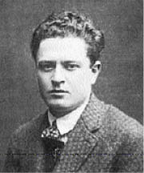
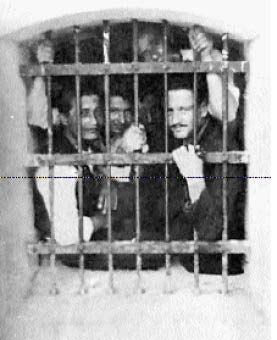
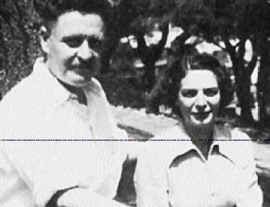
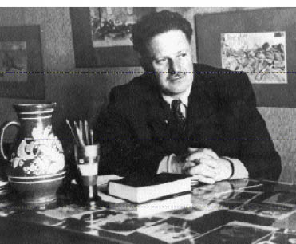
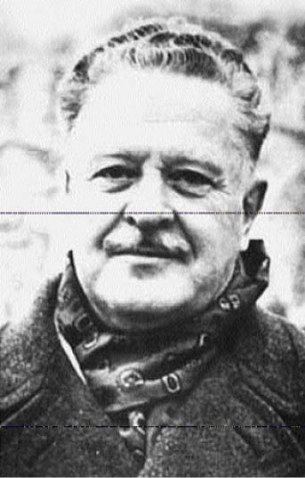

İNANÇ İLE KAVGA,SEVGİ İLE AYRILIK
AİLESİ, ÇOCUKLUĞU
Nâzım Hikmet rumî 2 Kânûn-ı sâni 1317 (milâdi 15 Ocak 1902) Çarşamba günü Selanik’te doğar.1
Babası Hikmet Nâzım Bey o sıra Kalem-i Ecnebiye memurudur. Daha sonra Umûr-ı Ecnebiye müdürü olmuştur. 1876’da İstanbul’da doğmuş, Mekteb-i Sultani’yi bitirmiştir. İyi Fransızca bilir. Özgürlükçü düşüncelere bağlıdır. Abdülhamit’i sevmez. İllerde valiliklerde bulunmuş Mehmet Nâzım Paşa’nın oğludur. İki kız kardeşi vardır: Mediha, Güzide.
Nâzım Hikmet’in annesi Ayşe Celile Hanım dilci Enver Paşa ile Leylâ Hanımın kızıdır. Leylâ Hanımın babası Mehmet Ali Paşa, Alman kökenlidir, Ali Fuat (Cebesoy) Paşa’nın dedesidir. Enver Paşa’nın babası ise Gagavuz (Karaoğuz) denilen Polonyalı Hıristiyan Türklerden Mustafa Celâlettin Paşa’dır, ilk adı Konstanti Borjenski’dir. Ömer Paşa’nın kızı Sıdıka (Saffet) Hanımın kocasıdır. Celile Hanım özel öğrenim görmüştür. Fransızca konuşur, Baudelaire ile Lamartine’i aslından okur, piyano çalar, resim yapar. Güzel, nitelikli bir kadındır. Hikmet Beyle 1901 Şubatında evlenmiştir. İki erkek, iki kız kardeşi vardır: Mehmet Ali, Mustafa, Sara ve Münevver.
Görevinden pek hoşlanmayan ve Abdülhamit’in baskıcı yönetiminden de sıkılan Hikmet Bey istifa eder. Ticaretle uğraşmayı tasarlamaktadır. Ailesini Selanik’ten Halep’e, babası Vali Mehmet Nâzım Paşa’nın yanına götürür. Orada kısıtlı sermayesiyle ticaret yapmaya girişir. Fakat başarılı olamaz. Celile Hanım Halep’te biri oğlan (Ali İbrahim), öbürü kız (Samiye) iki çocuk doğurur. Ali İbrahim dizanteriye yakalanıp ölür. Nâzım Paşa Diyarbakır valiliğine atanınca, Hikmet Beyle ailesi de oraya giderler. Dedesi Nâzım Hikmet’e aşırı ilgi ve sevgi gösterir.
Nâzım Paşa namuslu, kültürlü, Mevleviliğe bağlı, tatlı dilli, şair yaratılışlı, sevecen bir kişidir. Arapça ve Farsça bilir. Çevirileri yanında Muhataba, Yekazâr, Ahd-i Şehriyari, Kerbelâ gibi eserleri de vardır. Dürüst ve özgürlükçü olduğundan Diyarbakır’a gönderilmiştir. Hikmet Bey orada çok kalamaz. Bunalır. Eşiyle çocuklarını da yanına alarak İstanbul’un yolunu tutar. Yaşam kavgasını İstanbul’da sürdürür. Akrabalarının da yardımıyla bir süthane açar. Paralı bir de ortak bulur. İşleri önceleri iyi giderse de sonraları bozulur. İttihat ve Terakki Fırkası’na yakınlık duyduğundan Hariciye Nezareti’ne başvurur. 28 Şubat 1914’te Matbuat-ı Umumiye çevirmenliğine atanır. İşleri biraz düzelince evini Bahariye’den Göztepe’ye taşır.
Konya Sivas valiliklerinde bulunduktan sonra 1910’da emekliye ayrılan Nâzım Paşa da İstanbul’a gelir.
ÖĞRENCİLİĞİ, İLK ŞİİRLERİ
Nâzım Hikmet, bir yıl kadar, Fransızca öğretim yapan bir okula devam eder. Ardından Göztepe’deki Numune Mektebi’ne girer. Arkadaşı Vâlâ Nurettin’le ilkokulu (Taşmektep) bitirince, Galatasaray Sultanisi’nin orta kısmına yazılır. Ne var ki, burası oldukça masraflı bir okuldur. Bundan ötürü, babası bir yıl sonra onu Galatasaray’dan alır, Nişantaşı Sultanisi’ne verir.
Nâzım Hikmet, Sultani’de örnek bir öğrenci olur. Öğretmenlerinden sık sık “aferin” alır. Ayrıca, elinden düşürmediği sarı yapraklı bir deftere şiirler yazar, portreler çizer. Defterindeki ilk şiiri 20 Haziran 1329 (3 Temmuz 1913) tarihini taşır. “Feryâd-ı Vatan” başlıklı bu şiiri Nâzım Hikmet on bir yaşında iken yazmıştır. Balkan Savaşı’nda Osmanlıların yenik düşmesi ve düşmanların Çatalca’ya kadar gelmesi üzerine kaleme alınan şiirde şairin bundan duyduğu derin üzüntü ile çok sevdiği yurdunu kurtarma istek ve umudu yansıtılmaktadır:

Sisli bir sabahtı henüz
Etrafı sarmıştı bir duman
Uzaktan geldi bir ses ah aman aman!
Sen bu feryâd-ı vatanı dinle işit
Dinle de vicdanına öyle hükmet
Vatanın parçalanmış bağrı
Bekliyor senden ümit.
Fakat, kendisinin açıklamasına göre, ilk yazdığı şiir “Yangın”dır. Bu şiiri, evlerinin karşısındaki bir binada çıkan yangın üzerine 6 Kânûn-ı evvel 1330 (19 Aralık 1914) tarihinde kaleme almıştır. Ölçüsüz, daha doğrusu, bozuk düzenli bir denemedir. Şairin deyimiyle, “vezni, büyükbabasının yüksek sesle okuduğu aruzla yazılmış şiirlerin kulağında kalan ses taklitleriyle yapılmıştır.”
Hikmet Beyin Göztepe’deki evinde kalan Nâzım Paşa torununun eğitimiyle yakından ilgilenir. Nâzım Hikmet ilk şiir dersini ve zevkini ondan alır. Dedesinin ve arkadaşlarının tasavvuf ve edebiyata ilişkin konuşmalarını can kulağıyla dinler.
Hikmet Bey Matbuat-ı Umumiye çevirmenliğinden, bir süre sonra, Matbuat Umum Müdür yardımcılığına getirilir. Birinci Dünya Savaşı başlamıştır. Evde hep siyasal olaylar, savaş haberleri konuşulmaktadır. Nâzım Hikmet’in dayısı ressam, şair Mehmet Ali gönüllü olarak Balkan Harbi’ne gitmiş, ardından Çanakkale’ye geçmiş, orada yiğitçe çarpışarak şehit düşmüştür. Onu çok seven, beğenen Nâzım Hikmet 1915’te “Şehit Dayıma” başlıklı şiirini kaleme alır. (Bunun arkasından yurt sevgisi, kahramanlık özlemi ve ulusalcılık duygusuyla yoğrulmuş başka şiirler sökün eder: “Vatana, Olma Mağlûp, Dayım, Benim Dayım, Irkıma, Çelik, İntikam, Viran Diyar” vb.)
“Şehit Dayıma” şiirini kız kardeşinin kedisi için yazdığı “Samiye’nin Kedisi” izler. Şiiri okuyan Yahya Kemal, kediyi görünce şaşırır. Nâzım Hikmet’e, “Sen bu pis, uyuz kediyi böyle övmesini biliyorsun, şair olacaksın!” der.
BAHRİYE’DE
Nâzım Hikmet, 16 Aralık 1914’te “Bir Bahriyelinin Ağzından” başlıklı bir şiir yazar. Aile dostlarından Bahriye Nâzırı Cemal Paşa’nın önünde okur. Nâzır pek duygulanır. Çocuğun Bahriye’ye verilmesini önerir. Onun yardımıyla Nâzım Hikmet, Nişantaşı Sultanisi’nden ayrılır, 962 numarayla Heybeliada Mektebi’ne girer. Burası oldukça disiplinli bir okuldur. Şair Yahya Kemal de orada öğretmendir.
Yahya Kemal’in Celile Hanıma eğilim duyduğu ve onunla ilişki kurduğu söylenir. Nâzım Hikmet’in şiir sanatını öğrenmesinde onun da payı vardır. Örneğin, 1918 güzünde yazılan ve Yeni Mecmua’da yayımlanan “Hâlâ Servilerde Ağlıyorlar mı” şiirini gözden geçirmiş birçok yerlerini düzeltmiştir.
Söylentileri duyan Hikmet Bey bozulur. Karısıyla arası gitgide açılır. Kıskançlık ve hınçla o da çapkınlığa kalkışır. Bunu öğrenen Celile Hanım yaralanır, ayrılmaya karar verir. Olup bitenlere çok üzülen Nâzım Hikmet onları uzlaştırmaya çalışırsa da başaramaz. Geçimsizlikten bıkıp yorulan eşler sonunda boşanırlar.
Hikmet Bey bir süre sonra Cavide Hanımla evlenir. Ondan Metin ve Fatma (Melda) adlarında iki çocuğu olur.
“Cânân” diye çağırdığı Celile Hanımla evlenmek isteyen ve onun için “Telaki, Erenköy’de Bahar, Bir Tepeden” gibi aşk şiirleri yazan Yahya Kemal sözünde durmaz. Hayal kırıklığına uğrayan Celile Hanım resim dalında öğrenim ve inceleme yapmak üzere Paris’e gider. Nâzım Hikmet, hem hiç beklemediği bu olaya, hem de küçük kardeşi Samiye’nin annesiz kalışına çok üzülür. 1919’da Kadıköy’de yazdığı “Acılarımdan” başlıklı şiirinde bu üzüntüsünü dile getirir:
Belli ki kardeşim darılmış yine
İşte ak yüzünden üç damla kaydı
Eş olmak istedim ben elemine
O bana küserek bin sebep saydı
Dedim ki: Yüzünde yine yaşlar mı?
Küçücük hanımlar hiç ağlarlar mı?
Dedi: Ağlar mıydım, hiç şüphe var mı?
Benim de yanımda annem olsaydı...
Nâzım Hikmet, Bahriye’yi bitirince, Hamidiye kruvazöründe stajyer güverte subaylığına verilir. Fakat bir süre sonra, 1919 kışında gece nöbetinde ciğerlerinden hastalanır: Zatülcempe yakalanır. Doktor Şinasi Hakkı Paşa tedavisini üstlenir. İki ay evde yatakta dinlenmesini salık verir. Öyleyken Nâzım Hikmet iyileşmez, iştahtan kesilir, gittikçe zayıflar. Yeniden hastaneye götürülür. Sıkı bir muayeneden geçirilir. Sağlık Kurulu bu durumda subaylık yapamayacağını anlar. Düzenlediği raporla onu 17 Mayıs 1336 (1920)’de askerlikten çürüğe çıkarır.
Nâzım Hikmet delikanlılık döneminde, ilkin Rum kızı Marika ile arkadaşlık eder. Ardından, eski valilerden birinin kızı olan Sabiha’ya tutulur, onun için “Gözleri Siyah Kadın” şiirini yazar. Sabiha’nın evlenişinden yahut İstanbul’dan ayrılışından sonra bir doktorun iri gözlü, esmer güzeli kızına eğilim duyar, onun için de “Azize” şiirini yazar. Şiir, Ümit dergisinin 23 Eylül (1920) tarihli 10. sayısında yayımlanır:
Bir ilâhi gibi içten duyulur
Seven gönüllere âşinâ sesin:
Başında hâlenûr, gözlerin nûr,
Sevda mabedinde bir azizesin.
(...)
1920’de İstanbul işgal edilir. Nâzım Hikmet üzüntüden kahrolur. Aşk şiirlerine bir süre ara verir. “Kırk Haramilerin Esiri, Kaçırılan Kız Kardeşler, Efendinin Nasihati, Yaralı Hayalet, Çanakkale Masalı, Sekiz Yüz Elli Yedi, Sarı Zeybek, 16 Mart, Ağa Camii” gibi şiirler yazar. Bunlar yurtsever, ulusalcı çevrelerde olumlu yankılar yaratır. Özellikle “Kırk Haramilerin Esiri”2ile “Yaralı Hayalet”3başlıklı –işgal altında yazılıp yayımlanan– şiirler ilgi ve sevgiyle okunur.
DERGİLERDE, GAZETELERDE
Nâzım Hikmet’in 3 Ekim 1918’de Yahya Kemal’in yardımıyla Yeni Mecmua’da Mehmet Nâzım imzasıyla ilk şiiri çıkar: “Hâlâ Servilerde Ağlıyorlar mı?”. Ardından, 1920’de Üçüncü Kitap, Dördüncü Kitap, Altıncı Kitap, Yedinci Kitap, Sekizinci Kitap ve Ümit adlı dergilerde başka şiirleri görülür. Aynı yıl Alemdar gazetesinin açtığı yarışmada “Bir Dakika” başlıklı şiiriyle birincilik kazanır.4Gerek bu gazetelerde, gerekse Anadolu’da Yeni Gün gazetesinde, Ümit yahut Yarın dergisinde 1920-1922 yılları arasında yayımlanan şiirleri basında olumlu yankılar yaratırlar. Ahmet Hâmit, Refi Cevat gibi yazarlar ile Halit Fahri, Yusuf Ziya gibi şairler ondan övgüyle söz ederler. Örneğin Yusuf Ziya Alemdar’ın 6 Teşrin-i sâni 1336 (Kasım 1920) günlü sayısında şunları yazar:
“Nâzım Hikmet, bu yaşı henüz yirmiyi bulmayan çocuk ‘Ocak Başı’ diye bir perdelik bir manzum piyes yazıyor ki, her mısraında, yarınki büyük muvaffakiyeti müjdeleyen sihirli bir kuvvet var.”
İstanbul’un işgali ve ardından Mütareke dönemi Nâzım Hikmet’i çok üzer. “Mütareke Geceleri” başlıklı şiirinde bu duygusunu dile getirir. “Yıkılan bir yurdun harabesinde öten baykuşlar”dan acıyla söz eder. 1920 yılının Aralık ayında “Gençlik” adlı bir başka şiir yazar. Babasına adadığı bu şiirde ulusunun kurtuluşu için gençliği eyleme çağırır:
(...)
Git bugün o ıssız yollarda ağla
Dört yıldır her yerde can verirken ilk
Bak bugün mukaddes duygularınla.
Sana sus derlerken... Haykır! ey gençlik.
ANADOLU’YA KAÇIŞ
Nâzım Hikmet, şiiri sessizce babasının masasına bırakır. Anadolu’daki “millî mücadele”ye katılmak amacıyla evden çıkar. Arkadaşı Vâlâ Nurettin ile Yusuf Ziya ve Faruk Nafiz’le buluşur. 1 Ocak 1921 günü Sirkeci’den kalkan köhne ve küçük Yeni Dünya vapuruna binerler. Pamuk balyalarının arasına gizlenirler. Zonguldak’ta iyi karşılanırlar. İnebolu’ya varınca inerler. Nâzım Hikmet burada Anadolu halkının, özellikle köylünün çileli yaşayışını yakından görür. Adamakıllı sarsılır. Bu arada Spartakislerden Sadık Ahi (Mehmet Eti) adlı bir sosyalistle tanışır. Ondan yeni şeyler öğrenir. Sekiz on gün sonra Ankara’dan “harcırah ve müsaade” gelir. Faruk Nafiz ile Yusuf Ziya –Anadolu’ya geçişlerine izin verilmediği için– İstanbul’a geri dönerler. Nâzım Hikmet’le Vâlâ Nurettin yola dizilirler. Eşyalarını bir merkebe yüklerler. Yanlarında bir de kılavuzları vardır. Mevsim kıştır, ortalık karla kaplıdır. Kastamonu’da bir süre konaklarlar. Yayan yedi günde Ankara’ya ulaşırlar.
İki arkadaş tuttuk dağlara giden yolu.
Öyle yükselmişiz ki sahilde İnebolu
İnce sokaklarıyla ufaldıkça ufaldı.
Minareler bir çizgi, camiler nokta kaldı.
(...)
(İnebolu)
İki arkadaş Ulus’ta Taşhan’ın odasına yerleşirler. Matbuat Müdürlüğü’ne başvurulur. Muhittin (Birgen) Bey onları iyi karşılar. Bir süre evinde konuk eder. Amaçlarını sorar. Maarifte çalışmalarını salık verir. Önce razı olmazlar. Fakat cepheye gitme işi suya düşünce kabul ederler. Tedrisat-ı Taliye Müdürü Kâzım Nâmi’nin (Duru) yardımıyla 14 Haziran 1921’de Bolu Sultanisi “kısm-ı iptidai muallimliği”ne atanırlar.
Yine yayan yola dizilirler. Yanlarına bir de katırcı alırlar. Kızılcahamam-Gerede yoluyla dört günde Bolu’ya varırlar. Bir hana inerler. Sonra üç odalı bir eve taşınırlar. Evleri okula yakındır. Fakat çevre tutucudur. Bu yüzden iki arkadaş oldukça sıkıntı çekerler. Kendilerini şiir denemelerine verirler. Gittikleri Beyler Kahvesi’nde Ziya Hilmi adında genç bir yargıçla tanışırlar. Bu; kültürlü, namuslu, sosyalist bir kişidir. Köyde ortaklaşa bir ev tutarlar, birlikte otururlar. Nâzım Hikmet bir yandan Baudelaire ile Fransız İhtilâli’ni okurken, bir yandan da dinci yobazları, gericileri, çıkarcıları yeren “Kara Kuvvet” gibi şiirler yazar. Türk Ocağı’nın açılış gününde “Kırk Haramilerin Esiri” şiirini okur. Kuvâyi Milliye’cilere karşı padişahları tutan Bolu eşrafından bir kesimin düşmanlığını kazanır. Vâlâ Nurettin’le bunlardan birini, bir ağayı yeren Taş Yürek oyununu kaleme alırlar.
RUSYA’YA YOLCULUK
Üç arkadaş hem öğrenimlerini ilerletmek, hem de olup bitenleri görmek amacıyla Rusya’ya gitmeye karar verirler. 1921 Ağustosunda bir yaylıyla yola çıkarlar. Ortalık eşkıya doludur. Güçlükle Düzce’ye varırlar. Akaçakoca’dan Zonguldak’a, oradan vapurla Trabzon’a giderler.
Ziya Hilmi Trabzon’da kalır. Nâzım Hikmet’le Vâlâ Nurettin valiye çıkarlar. Öğretmenlik belgelerini gösterirler. Batum yoluyla Kars’a gitmek, orada, Kâzım Karabekir’in bölgesinde çalışmak istediklerini söylerler. Nâzım Hikmet’in dedesi Nâzım Paşa’yı tanırmış. İşlerini yaptırır.
Trabzon’dan geçmekte olan İtalyan bandıralı Kornilov vapuruyla 30 Eylül 1921’de Batum’a ulaşırlar. Trenle Tiflis’e giderler. Orada Muhittin (Birgen) Beyin eşi Melâhat Hanımla karşılaşırlar. Ahmet Cevat (Emre) ile tanışırlar, birlikte Batum’a dönerler. Bir süre onun Hotel de France’da ayırttığı odada kalırlar. Sıkıntılı günler geçirirler. Bu arada Şevket Süreyya (Aydemir)’ya rastlarlar. Ahmet Cevat Moskova’da Şarkiyat Enstitüsü’nden öğretmenlik teklifi alır. 1922 Temmuzunda Tiflis’ten trenle dört arkadaş Moskova’ya doğru yola çıkarlar.
Moskova’ya varınca Lux Otel’e inerler. Nâzım Hikmet tren yolculuğu boyunca gördüğü açlığı 1922’de özgür koşuğa yakın bir biçimde yazdığı şiirde dile getirir: “Açların Gözbebekleri”.
Bir süre sonra üç arkadaş (Nâzım Hikmet, Vâlâ Nurettin, Şevket Süreyya) Kutv Üniversitesi’ne (Doğu Ülkeleri Emekçileri Komünist Üniversitesi) yazılırlar. Burada çeşitli ülkelerden gelen gençlerle tanışırlar. Fransızcalarını ilerletirler, Rusçaya çalışırlar, ekonomi politik öğrenirler.
Nâzım Hikmet –kendi deyişiyle– Moskova’da “Stanislavski’nin, Meyerhold’un, Vahtangov’un, Tairov’un ellerinden taze çıkmış, dumanı üstünde, buram buram hayat, devrim, güzellik, kahramanlık, iyilik, akıl, zekâ kokan oyunlar” seyreder. Üniversite kulübünün temsil kolunda görev alır, yönetmen Emilyeviç Meyerhold ve Nikolay Ek’le arkadaş olur. Ek’le ancak altı ay dayanabilen Metla tiyatro artelini kurar. Ayrıca, bol bol şiir yazar. Öncü (avant-garde) Rus şiirini inceler. Bagritski’yi, Mayakovski’yi, Selvinski’yi, İnber’i, Panov’u tanır. Bunlardan konstrüktivist Bagritski’yle dostluk kurar. Bu sırada Nüzhet Hanım Moskova’ya gelir. Öğrenci olarak KUTV’a yazılır. Bunda Nâzım Hikmet’in de etkisi vardır.
Nâzım’la Nüzhet, ilkin 1915’te İstanbul’da Nişantaşı’nda tanışmışlardı. Çünkü Muhittin Beyle Hikmet Bey komşu apartmanlarda oturuyorlar ve birbirleriyle görüşüyorlardı. Nüzhet, gümrük başkâtibi İsmet Beyin kızıydı. 1900’de dünyaya geldiğinde babası ölmüştü. Kendisini annesi Hoşnaz Hanım büyütmüş, 1914’te eniştesi Muhittin Bey onu yanına almıştı. Muhittin Bey, Tanin gazetesinin başyazarıydı. Kurtuluş Savaşı başlayınca Ankara’ya geçmiş, orada Matbuat Müdürü olmuştu. Nâzım’ın Bolu’ya atanması yolunda çaba göstermişti. 9 Mart 1921’de müdürlükten çekilmiş, bir süre ticaretle uğraşmış ve Tiflis’e gitmişti.
Nâzım, Nüzhet’le orada ikinci kez karşılaşır. Moskova’ya gittikten sonra ona birkaç mektup yazar, şiirlerini gönderir ve onu Moskova’ya çağırır. Ailesinin de onayını alan Nüzhet, öğrenim için Moskova’ya gider, KUTV’a girer. Nâzım’la arkadaşlıkları ilerler. Sonunda evlenirler. Fakat Nüzhet’in sağlığı günden güne bozulur. 1923 ders yılı bitiminde Bakû’ye, eniştesinin yanına gitmek gereğini duyar. İyileşince geri dönecektir. Gelgelelim, hastalığı daha da ilerler. Tedavi için Muhittin Beyle birlikte İstanbul’a gitmek zorunda kalır. Durumu Nâzım’a bildirir.
Türkiye’den, Dr. Numan Paşa’nın önerisiyle, Avrupa’ya giden Nüzhet Hanım, Tatra Sanatoryumu’nda beş altı aylık bir tedaviyle sağlığına kavuşur. Bu arada evliliği üzerinde uzun uzun düşünür. Ona göre, “Nâzım çok hareketli, canlı, heyecanlı, gerçek bir devdir, büyük bir enerji deposu, üstün bir şairdir. Kendisi ise sakin yaratılışlıdır. Bu hasta bünye ile ona yoldaşlık edemeyeceğinden, devrimci çabasına ayak bağı olacağından korkmaktadır. Bundan ötürü, ayrılmaları gerektiğine inanmaktadır.”5Gerçekten de ikisinin yaratılışları, kişilikleri, eğilimleri, inançları birbirinden ayrıdır. Nâzım Hikmet coşkun, ülkücü, kavgacı bir gençtir. Nüzhet Hanım ise durgun, uysal, evcil bir kızdır, amacı bir yuva kurmak, orada çoluk çocuğuyla düzenli, sessiz bir yaşam sürmektir.
Nüzhet Hanım düşüncelerini 1924 yılında Türkiye’ye gelen Nâzım Hikmet’e açıklar. O, bunlara karşı çıkarsa da, eşinin diretmesi sonunda ayrılmaya razı olur.
Nüzhet Hanım bir süre sonra Servet Berkin adlı bir felsefe öğretmeniyle evlenir. Bir gün Beyoğlu’nda bir tiyatrodan çıkarken Nâzım Hikmet’le karşılaşır ve başını çevirir. Nâzım Hikmet buna pek üzülür. Duygu ve düşüncelerini “Mavi Gözlü Dev, Minnacık Kadın ve Hanımelleri” şiirinde dile getirir:
O mavi gözlü bir devdi
Minnacık bir kadın sevdi.
Kadının hayali minnacık bir evdi,
bahçesinde ebruli
hanımeli
açan bir ev.
(...)
1923 Ocağında Mayerhold Tiyatrosu’nda düzenlenen Uluslararası Sanat Gösterisi’nde Nâzım Hikmet, “Yeni Sanat” başlıklı şiirini okur. Çoğu Türkçe bilmemelerine karşı dinleyiciler onu içtenlikle alkışlarlar. Şiirden taşan devrimci coşku ile dizelerdeki güçlü ritim ve ses uyumu onları etkiler. Daha sonra Uluslararası Kadınlar Günü’nde okuduğu “Bizde Pantolonla Eteklik” şiiri de alkışlarla karşılanır. 2 Nisan 1923’te Büyük Tiyatro’da Mayerhold için yazdığı övücü şiiri okur. Tretyakov şiiri Rusça’ya çevirir ve Zrelişça dergisinin Mayıs sayısında yayımlar:
“Mayerhold Tiyatrosu”na başlığını taşıyan ve dergide “Nazim” imzasıyla basılan şiirin aslının ilk kesimi şöyledir:
Hiçbiri... Hiçbiri
bizim değil...
Ne Mali Teatr’ın düzgünlü “Hamlet”i
ne pudra ponponu “Prenses Turandet”
ne de Kamerti’nin “Karnaval Fedr”i.
Biz
burjuvazinin
allı pullu, telli tüllü metreslerine
çiçek atmak istemiyoruz.
(...)
Aynı dönemde Nâzım Hikmet, Moskova’dan İstanbul’da Aydınlık dergisine de şiirler (“Yeni Sanat, Grev, Müşterek Zahmet, Aydınlık, İlim, Şairim, Aydınlıkçılar, Yayından Fırlayan Ok, Heyecanımız, 7 Teşrin-i sâni Şark-garp, Aydınlıkçılar, Ayağa Kalkın Efendiler” vb.) ile yazılar (“Türkiye’de Amele Sınıfı ve Amele Meselesi, Diyalektik Materyalizme Küçük Bir Medhal” vb.) gönderir. Bunlar 1923-1924 yıllarında yayımlanır.
Lenin ölünce, Nâzım Hikmet, karlı bir kış günü onun mezarında beş dakika nöbet tutar. “21.1.1924” başlıklı şiirinde bu olayı anlatır. Mustafa Suphi’nin acıklı serüvenini işleyen 28 Kânûn-ı sânî oyununu kaleme alır. Ardından Ek’le birlikte Kabahat Kimde adlı bir perdelik oyununu düzenler. Her iki oyun da Moskova’da (biri Kalyeyef, öbürü Metla Tiyatrosu’nda) sahneye konur. Bunları, temsil edilmeyen (biri bale) iki oyun yazılışı izler: Ehram, Ayın On Dördü. Birincisini rejisör Mayerhold beğenir, ikincisi ise tamamlanmadan kalır.
Nüzhet Hanımdan ayrıldıktan sonra Nâzım Hikmet üniversitedeki arkadaşlarından sarı saçlı, mavi gözlü Liyolya’ya yakınlık duyar. Kız da kendisinden hoşlanmaktadır. Öyleyken ayrılmak zorunda kalırlar. Çünkü, Nâzım Hikmet yıl sonuna doğru yurduna döner. Gerçi sevgilisini de İstanbul’a aldıracağını söyler, ama olanak bulamaz. Odesa’ya kadar gelen Liyolya, Türkiye’ye geçemez.6
TÜRKİYE’YE DÖNÜŞ
Rusya!
Senden ayrılırken kafamızda,
Engels’in materyalizmi gibi ölmez
hatıralar var!
SSSR
gidiyoruz artık,
ver elini ver
vedalaşalım!..
(...)
Kutv Üniversitesi’ni bitirince, Nâzım Hikmet, Rusya’dan ayrılır, 1924 Aralığında Türkiye’ye gelir. Babası 1918’de Hamburg Başkonsolosluğuna atanmış, 1922’de emekliye ayrılmıştır. Bir ara Yeni Şark gazetesinde idare müdürü olarak çalışmıştır. Şimdi İstanbul’da Kadıköy’de bir ahşap evde oturmaktadır. Oğlunu yeniden görünce çok sevinir.
Nâzım Hikmet bir yandan babasının çıkardığı Sinema Postası dergisinin teknik işlerine yardım ederken, bir yandan da gerek kendi adıyla, gerekse N.H. yahut Ahmet imzasıyla Aydınlık dergisine yazılar, şiirler yetiştirir. Ayrıca, 21 Ocak 1925’te çıkmaya başlayan Orak-Çekiç gazetesine de yazar. Hatta, adı geçen dergi ile gazeteyi sokak sokak dolaşarak satmaya çalışır.
Bu eylemleri dolayısıyla polisçe izlenir. Hem bundan kurtulmak, hem de bazı örgütsel işleri kotarmak amacıyla gizlice İzmir’e gider. Şimendifer İşçileri Cemiyeti’nin ikinci başkanı Hüseyin Safter’in Eşrefpaşa’da Bayramyeri’ndeki evinde kalır. Fakat Cemiyet’in kapatılması ve yöneticilerinin soruşturulması üzerine, Giritli Mehmet Ali adlı bir parti arkadaşının bulduğu bir eve yerleşir.7Burası yangın yerinde, taştan yapılma, penceresiz, küçük bir kulübedir. Gündüzleri burada bekler, geceleri tahta kapıyı sessizce açar, karanlık yollardan gizlice örgüt toplantılarına gider. Birkaç ay bu göz gözü görmez, daha doğrusu, ipince bir gün ışığının aydınlattığı yerde yaşar. Polis ise İstanbul’da harıl harıl onu aramaktadır. “Güneşi İçenlerin Türküsü”nü o günlerde yazar.8
1925 Şubatında başlayan Kürt Şeyh Sait İsyanı öne sürülerek 4 Mart 1925’te Takrir-i Sükûn Kanunu çıkarılır. 6 Martta Vekiller Heyeti kararıyla Tevhid-i Efkâr, Son Telgraf, İstiklâl, Toksöz, Orak-Çekiç gazeteleri ile Sebilürreşat, Yoldaş, Aydınlık dergileri kapatılır. Bunları Tanin, Sada-yı Hak, Savha gazetelerinin kapatılması izler. 1 Mayıs’ta yapılan bir toplantı nedeniyle Amele Teali Cemiyeti yöneticilerinden birkaçı ile yayımlanan bir broşür dolayısıyla Aydınlık’ın yazarlarından çoğu gözaltına alınır. Aydınlık’ta çıkan şiir ve yazılarından ötürü Nâzım Hikmet de İstanbul’da aranmış, fakat bulunamamıştır. Öyleyken, Ali Çetinkaya’nın başkanlığındaki İstiklâl Mahkemesi, üç gün süren duruşma sonunda, 12 Ağustos’ta onu on beş yıl küreğe mahkûm eder. Onun gibi Şefik Hüsnü, Hasan Ali ve Cevdet de gıyaben on beş yıla hüküm giyerler.
İzmir’de baskı ve aramaların arttığını gören Nâzım Hikmet, partidaşı İsmail’den aldığı nüfus kâğıdını kullanarak trenle 29 Ağustosta İstanbul’a döner. Annesinin evine uğrar. (Birkaç gün önce babasının evini polisler basmış, adresini sormuş, bilmediğini söyleyince tartaklamışlardır. Ayrıca, gözaltına alınanlardan tıbbiye öğrencisi Neşati’yi epeyce dövmüşlerdir.) Amacı yurt dışına çıkmaktır. Celile Hanım oğluna güzel bir makyaj yapar, yüzünü değiştirir. Nâzım Hikmet tayfa kıyafetiyle bir takaya binip kaçar. Günlerce sonra, Kırım üzerinden Şefik Hüsnü’yle birlikte Moskova’ya varır.
1927 Eylülünde İstanbul’da dağıtılan bildiriler dolayısıyla Türkiye Komünist Partisi için açılan dava sonunda Birinci Ağır Ceza Mahkemesi’nin 23 Ocak 1928 günü gıyabında verdiği kararla üç aya hüküm giydiğini öğrenir. Mahkûmiyetinin dayanağı, 1926’da Viyana’da yapılan Parti konferansına katıldığı yolunda yalnızca iki kişinin, Vedat Nedim ile Şevket Süreyya’nın verdiği ifadelerdir.
Suçsuz olduğuna inanmaktadır. Fakat şimdilik yapacağı bir şey yoktur. İki yıl daha Moskova’da öğrenim görür. Özellikle sanat, edebiyat ve tiyatro alanındaki bilgisini arttırmaya çalışır. Kendi deyimiyle günleri “gayet dürüst, düzgün ve intizamlı” geçer. 1925’de Kutv öğrenci yurdunda Lena Yurçenko ile tanışır. Bu, yuvarlak yüzlü, iri gözlü ve açık sözlü bir kızdır. 1926 yılının sonlarına doğru evlenirler.
Nâzım Hikmet bir yandan Kutv’da okur ve yardımcı öğretmenlik yaparken, bir yandan da yeni şiirler yazar. Şiirlerinden bazıları Rusça’ya çevrilerek dergilerde yayımlanır. 1928’de Bakû’de bir de şiir kitabı basılır: Güneşi İçenlerin Türküsü. Kitap Azerbaycan’da ilgiyle karşılanır. Dört beş dergide övgü dolu yazılara konu olur.
Nâzım Hikmet yurdunu çok özlemiştir. 1927’de yazdığı “Hasret” şiiri bu duygunun ürünüdür.
Denize dönmek istiyorum!
Mavi aynasında suların
boy verip görünmek istiyorum!
Denize dönmek istiyorum!
(...)
1926’da yeni Türk Ceza Kanunu kabul edilir. Buna göre İstiklal Mahkemesi’nin 1925’de Nâzım Hikmet’i yargılarken dayandığı maddenin 15 yıllık cezası 1 yıla iner. Ayrıca, 4 Mart 1929’da Takrir-i Sükûn Kanunu da yürürlükten kalkar. Nâzım Hikmet eşi Lena’yla yurduna dönmek için Türk Sefarethanesi’ne birkaç kez başvurursa da olumlu sonuç alamaz. Arkadaşı Laz İsmail ile Bakû’ye gelir, orada “Bahr-ı Hazer” şiirini kaleme alır. Temmuz sonunda başka birinin pasaportuyla Türkiye’ye girer. Fakat Hopa’da yakalanır, gözaltına alınır. (“Hopa Mapusanesi Notlarından” başlıklı üç şiiri orada yazar.) Üstü arandığında bir cep defteri bulunur. Defterde eski yazıyla “Heraklit’i Düşünürken” yazılıdır. Bunu “her ekalliyeti düşünürken” okurlar. Nâzım Hikmet durumu açıklarsa da inandıramaz. Beş gün sonra Rize’ye yollanır. Çünkü sorgu yargıçlığı kamu davası açılmasını öngörmüştür. Rize Ağır Ceza Mahkemesi’nde 146. maddeye göre idam istemiyle yargılanan Nâzım Hikmet “ekalliyetleri kışkırtma” suçundan aklanır. Fakat pasaportsuz sınırı geçme suçundan üç gün hapse hüküm giyer. Mahkeme tahliyesine karar verir. Ancak, daha önce başka bir suçtan gıyabi mahkûmiyet kararı bulunduğu öğrenildiğinden, jandarma gözetiminde kelepçeli olarak bir gemiyle İstanbul’a gönderilir, 4 Ekim’de savcılığa teslim edilir. Kendisiyle görüşen gazetecilere şunları söyler: “Ben, buradaki gıyabi mahkemelerimi temize çıkarmak için geldim. Hiçbir teşkilata mensup değilim. Marksizmin yalnız edebiyattaki tezahüratıyla alâkadarım. Muhakemem neticesinde beraat edeceğimden eminim. Sonra bir edebiyat mecmuası neşretmeyi düşünüyorum.”9
Savcı Kenan Bey, Ankara’da 1925’te ve İstanbul’da 1928’de gıyabında verilen mahkûmiyet kararlarını Nâzım Hikmet’e bildirir. Bunun üzerine, Nâzım Hikmet bir dilekçeyle yargılamaların yüzüne karşı yinelenmesini ister. Söz konusu iki davanın birleştirilmesine ve yargılamanın Ankara’da görülmesine karar verilir.
İstanbul Cezaevi’nde bir süre tutulan Nâzım Hikmet yargılanmak üzere Laz İsmail’le birlikte 14 Ekimde Ankara’ya götürülür. Bir beton hücreye kapatılır. 4 Kasım’da başlayan duruşmalar 23 Aralık’ta sona erer. Ağır Ceza Mahkemesi, Nâzım Hikmet’in Aydınlık dergisindeki yayınlarının “cürüm teşkil eder mahiyette olmamasından adem-i mesuliyetine” karar verir ve İstiklâl Mahkemesi’nin 1925’teki mahkûmiyet hükmünü kaldırır. Buna karşılık, “eşhâs-ı ahere ait pasaport taşıdığından üç gün hapsine” ilişkin cezayı 23 Ocak 1928 tarihli üç aylık ceza ile birleştirir. Gelgelelim, tutukluluk süresi mahkûmiyeti aştığından özgürlüğüne kavuşan Nâzım Hikmet, İstanbul’a döner. Savcılığa başvurur. Üç aylık mahkûmiyet kararının düzeltilmesi için geldiğini, partiye üye olmadığını bildirir. Dosyayı inceleyen Savcı Kenan Bey, genel aftan yararlandığını, artık suçsuz sayıldığını ve yapacak birşey bulunmadığını açıklar.
Şevket Süreyya (Aydemir) ile CHP’li bazı yöneticiler Nâzım Hikmet’i iktidarla uzlaştırarak Ankara’da kalması için epey uğraşırlar. Fakat o, hiçbirinin sözünü dinlemez. Doğruca İstanbul’a gider. Babasının Cevizlik’teki evine iner. Dedesi Nâzım Paşa 1926’da ölmüştür. Hikmet Bey, oğlu solcu olduğu için işinden çıkarılmıştır. Kadıköy’de Süreyya Paşa Sineması’nın müdürlüğünü yapmaktadır. Kazancı azdır. Nâzım Hikmet’in bir iş bulması gerekmektedir. Gazetecilerle yaptığı bir konuşmada, Türkiye’ye hem “gıyâbî mahkûmiyetlerini temize çıkarmak”, hem de “halk, işçi ve köylü edebiyatı neşretmek için” geldiğini, “burada Sol Cenah (Sol Kanat) isminde bir mecmua çıkaracağını” belirtir. Bu adı niçin seçtiğini ise şöyle açıklar:
“Rusya’da edebî bir mektep vardır. İsmine Sol Cenah derler. Bunları fütürist diye anlamışlardır. Halbuki sol cenahçılar konstrüktivisttir. Ben bu mektebe mensubum; bunun taammümünü istiyorum.”10
KALEM KAVGALARI
Eski arkadaşı Vâ-Nû’yu görür, durumunu anlatır. Onun aracılığıyla Mehmet Zekeriya ve Sabiha Zekeriya (Sertel) ile tanışır. Resimli Ay dergisinde düzeltici (müsahhih) olarak çalışmaya başlar. Ardından, derginin bazı resim işlerini de üstlenir. Daha sonra dergide şiirler, yazılar yayımlama olanağına kavuşur. İlk şiiri 1929 Haziranında “Yarıda Kalan Bir Bahar Yazısı” başlığıyla ve “İmzasızadam” adıyla basılır:
Vurdu gergin kalın parmaklar
yazı makinamın dişlerine.
Kâğıda her harfi majiskülle dizilmiş
üç kelime var:
BAHAR
BAHAR
BAHAR
ve ben şair musahhih,
ve ben her gün
iki liraya
2000 kötü satır okumaya
mecbur olan adam
(...)
Öteki şiirleri (Denizin Karşısında, Sesini Kaybeden Şehir, Kerem Gibi, İhtilâli Kebir) de aynı adla çıkar.
Nâzım Hikmet yalnızca “Cevap, Cevap No. 2” başlıklı şiirlerinde kendi adını kullanır. Yazılarında da yine imzasız adam ile Süleyman ve Orhan takma adlarına başvurur.
1929’da 835 Satır adlı şiir kitabını çıkarır. Kitap, Türk edebiyat dünyasında bir bomba gibi patlar. Biçimiyle olduğu kadar içeriğiyle de çevrede büyük yankılar uyandırır. Aşırı yergilerle övgüler birbirini kovalar. O kadar ki, o günlerin en gözde şairlerinden Ahmet Haşim bile Nâzım Hikmet’i alkışlamaktan kendini alamaz:
“... Şair müheykel bir şekil halinde semanın maviliğine karşı durmuş, cidden tuhaf; fakat ahengi cidden emsalsiz bir garip aletin tellerini söyletiyor. Bu vezin bildiğimiz vezinlerden değil, bu lisan şiirin bugüne kadar kullandığı lisana benzemiyor. (...) Bu şiirin eskisine nazaran rüçhanı muhakkak. Eskiden şiir bir tek düdükle söylenirdi. Nâzım Hikmet Bey bir tek âlet yerine koca bir orkestra takımı vücuda getirmiş...”11
Nâzım Hikmet, yeninin temellerini atmak ve başarılı örneklerini vermekle kalmaz, eski edebiyatı yıkmak ve önde gelen temsilcileriyle savaşmak gereğini de duyar. Kendisini izleyen genç kuşak da ondan bunu beklemektedir. “Yeni nesli tereddi ve hezal” ile seçlanan Yakup Kadri’nin yazısı12 bardağı taşıran damla olur. Peyami Safa ile Suat Tahsin ona karşı çıkarlar.13Ardından Nâzım Hikmet “Putları Yıkıyoruz” başlığı altında bir yazı dizisine başlar. En çok yüceltilen şairlerden Abdülhak Hâmit ve Mehmet Emin için yazdığı imzasız eleştiriler14 geniş tepkiler yaratır. Eskiden Nâzım Hikmet’i öven Yakup Kadri ve Ahmet Haşim ile Hamdullah Suphi, Yusuf Ziya gibi yazarlar ona hışımla, öfkeyle saldırırlar. Nâzım Hikmet onlardan ilk üçü için taşlama şiirleri (Cevap No. 1, Cevap No. 2, Cevap No. 3) kaleme alır. Önceleri Nâzım Hikmet’i tutan Peyami Safa sonraları saf değiştirir, jurnalcılığa kadar uzanan aşağılamalı, sövgülü, karalamalı yazılar yayımlar.15Nâzım Hikmet “Bir Provokatör Üstüne Hiciv Denemeleri” başlıklı yergisiyle onun da cevabını verir. Vâlâ Nurettin de fıkralarıyla arkadaşını destekler. Bunun üzerine, Yakup Kadri ve Hamdullah Suphi takımı gençleri kışkırtırlar. Türk Ocak’lı 30-35 kadar genç Resimli Ay matbaasının önüne gelirler. Bağırıp çağırırlar. Zekeriya Sertel onları içeriye alır. Nâzım Hikmet coşkulu, inandırıcı bir konuşmayla hepsini yatıştırır. Sessizce dağılıp giderler.
Nâzım Hikmet “Sesini Kaybeden Şehir” başlığıyla Resimli Ay’da (Temmuz 1929) çıkan ve işçileri greve özendirdiği öne sürülen bir şiirinden kovuşturmaya uğrar. Şiirin altında imzası bulunmadığından, onun yerine, derginin sorumlusu Behçet Bey yargılanır ve 8 Ocak 1930’da on gün hapse, on lira para cezasına hüküm giyer. Fakat hüküm 24 Mart 1930’da Yargıtay’da bozulur. 1930/33-26 sayılı kararla hem şiir, hem de Behçet Bey aklanır.
1930’da Kolombiya firması “Bahri Hazer” ve “Salkım söğüt” şiirlerini plağa alır. Nâzım Hikmet’in sesiyle doldurulan plak kahvelerde, lokantalarda çalınır. Hükümet telâşlanır, plakları toplatır ve çalınmasını yasaklar.
Nâzım Hikmet 1930’da “Fıkracı” takma adıyla Hür Adam ve 1931’de “ Ben” takma adıyla Yeni Gün gazetesinde fıkralar yazar.
835 Satır’ı 1929’da çıkan Jokond ile Si-Ya-U izler. Bir yıl sonra iki eser birden yayımlanır: Varan 3, 1+1=Bir. 1931 Ocağında Sesini Kaybeden Şehir basılır. Nisan sonunda adı geçen beş eser için kovuşturma açılır. Türk Ceza Kanunu’nun 311 ve 312. maddesi uyarınca “bir zümrenin hâkimiyetini temin etmek gayesine matuf olduğu ve halkı cürüm ikaına teşvik ettiği iddiasıyla” Nâzım Hikmet 6 Mayıs’ta 2. Asliye Ceza Mahkemesi’nde yargılanmaya başlar, 10 Mayıs’ta oybirliğiyle aklanır.
BABANIN ÖLÜMÜ
Nâzım Hikmet babası Hikmet Beyi çok sever. Onu hem babası, hem de kardeşi, arkadaşı sayar. Bunu 1 Ocak 1932’de yazdığı şu dizelerle dile getirir:
Baba!
her yılbaşında
sana söyleyecek
bir tek
sözüm var:
“Seni ne kadar çok seversem
o kadar
çok olsun ömründen geçen yıllar...”
Baba!
Babam, ağabeyim, kardeşim, arkadaşım!
Ne zulüm, ne ölüm, ne korku
başımı eğemez!
Yalnız senin elini öpmek için
eğilir başım.
Babam, ağabeyim, kardeşim, arkadaşım...
1932 Martında bir gün Hikmet Beyi köpek ısırır. Kuduz olma kaygısıyla hastaneye gider. Aşılanır. Eve dönerken karşıdan bir arabanın geldiğini görür. Yana çekilmek isterken başını duvara çarpar. Yaralanır. Tetanoz olma korkusuyla yeniden hastaneye gider. İğne yaparlar. Oysa bu iki iğne art arda yapılmazmış. Ateşler içinde eve gelir. Başı dönmekte, gözleri kararmaktadır. Tam bu sırada sinemanın patronu kapıda görünür. Hikmet Beyden hesap istemektedir. Fakat o konuşacak durumda değildir. Süreyya Paşa diretse de sonuç alamaz, öfkeyle çıkıp gider. Hikmet Bey bitkin düşmüştür, az sonra 19 Martta16 oğlunun dizinde can verir.
Nâzım Hikmet çok üzülür. Adı geçen işveren için “Hiciv Vadisinde Bir Tecrübei Kalemiye” şiirini yazar, 1932’nin son aylarında yayımlanan Gece Gelen Telgraf’a koyar. Süreyya Paşa (İlmen) söz konusu şiirde hem kendisine, hem de ölü babası Rıza Paşa’ya hakaret edildiğini öne sürerek dava açar. 8 Mayıs 1933’te 3. Ceza Mahkemesi’nde başlayan yargılama 27 Ağustos’ta sona erer. Vekili İrfan Emin’in başarılı savunmasına karşın Nâzım Hikmet TCK’nın 480. maddesi uyarınca bir yıl hapis ve 500 lira tazminat cezasına çarptırılır. 12 Eylül 1933 tarihli gerekçeli karar, Yargıtayca bozulur. Üstelik, 29 Ekim 1933 tarihinde çıkarılan Af Kanunu dolayısıyla mahkeme, davanın bütün sonuçlarıyla düşmesine karar verir.
1932’de Nâzım Hikmet’in Benerci Kendini Niçin Öldürdü? adlı şiir kitabı basılır. Mart’ta Kafatası ve Kasım’da Bir Ölü Evi oyunları Darülbedayi’de sahneye konur. Türk tiyatrosunda içerik ve biçimce yenilikler getiren her iki oyun da seyircilerin ilgisi ve eleştirmenlerin övgüsüyle karşılanır. Özellikle Kafatası Ahmet Rıdvan (Ertuğrul Muhsin), Yaşar Nabi, Selami İzzet, Nadire Sadi gibi yazarlarca değerlendirilir.
Aynı yıl Nâzım Hikmet kız kardeşi Samiye’nin yakın arkadaşı Hatice Zekiye Pirayende ile nişanlanır. Kısa adıyla Piraye Hanım 1908’de İstanbul’da doğmuş, 1924’te Vedat Örfi (Bengü) ile evlenmiştir. Fakat kocası kendisi ile iki çocuğunu (Memet Fuat ve Suzan’ı) bırakıp Mısır’a gitmiştir. Samiye’nin aracılığıyla Piraye Hanım 1930’da Nâzım Hikmet’le tanışmış ve 13 Eylül 1932’de eşinden boşanmıştır.
Nâzım Hikmet, yıllar sonra, onunla nasıl tanıştığını ve niçin evlendiğini şöyle açıklayacaktır: “Alev saçlı, hemen ben yaşlarda bir kadındı. Çok iyi bir kadın. Ve akıllı. Kız kardeşim sebebiyle birkaç yıldır tanıyorduk birbirimizi. Ve işte bir gün, öyle kendiliğinden karar verdik evlenmeye. Onunla iyi, dingin bir yaşam süreceğime emindim. Çok güzel bir kadın değildi ve bu da olumlu bir şeydi benim için. Çünkü kıskançlığın çılgınlığını yaşamıştım artık. 1932 yılında evlendik. Gerçekten de her şey düşlediğim gibi oldu.”17
Gece Gelen Telgraf için savcılık, halkı rejime karşı kışkırttığı suçlamasıyla Matbuat Kanunu’nun 40. maddesi gereğince kovuşturmaya geçer. 4 Nisan 1933’te 2. Ceza Mahkemesi’nde ilk duruşma yapılır. 29 Temmuz 1933’te Nâzım Hikmet altı ay üç güne hüküm giyer. Avukatı İrfan Emin kararı temyiz eder. Fakat Cumhuriyet’in onuncu yıldönümünde çıkarılan Af Kanunu’yla dava düşer.
HAPİSTE
1933’te Nâzım Hikmet üçüncü kez kovuşturmaya uğrar: 1932 yılı sonlarına doğru birkaç ille birlikte İstanbul’da da caddelerde duvarlara bildiriler yapıştırılır. Bunları Adana, Bursa ve Edirne illerini de kapsayan gizli bir örgütün yaptığı, Nâzım Hikmet’in de onunla ilişkili olduğu sanılır. Bu yüzden bazı kişilerle o da 18 Mart sabahı gözaltına alınır. Gözaltı önlemi, 7. Sorgu Yargıçlığı’nda ifadesi alındıktan sonra, aynı gün tutuklamaya çevrilir. Nâzım Hikmet, Sultanahmet Cezaevi’ne konur. Sorgu Yargıçlığı’nın yetkisizlik bildirmesi üzerine, 31 Mayısta Bursa Cezaevi’ne nakledilir. Temmuz ve Ağustos ayları içinde Süreyya Paşa ve Gece Gelen Telgraf davaları için İstanbul’a götürülüp getirilir. 30 Ekim’de iddianameyi alır. İddianamede Türkiye Komünist Partisi’nden ayrı gizli bir örgütün kurulduğu, özellikle işçiler arasında etkinlikte bulunduğu, Nâzım Hikmet’in de ona katıldığı ve bazı bildirilerle broşürleri kaleme aldığı öne sürülmektedir. TCK’nın 146 ve 147. maddelerine göre idamı istenmektedir. Nâzım Hikmet ise suçsuz olduğuna inanmaktadır. “Hakkın tecelli edeceğinden emin”dir.18Nitekim, 1933 yılı 11 Kasımında Piraye Hanıma yazdığı “Karıma Mektup” şiirinde bu duygusunu dile getirir:
(...)
Karım benim
iyi yürekli,
altın renkli,
gözleri baldan tatlı arım benim,
ne diye yazdım sana
istendiğini idamımın,
dava daha ilk adımında
ve bir şalgam gibi koparmıyorlar henüz
kellesini adamın.
Haydi bunlara boş ver.
Bunlar uzak bir ihtimal.
(...)
Duruşmalar 22 Kasım 1933’te Bursa 2. Ağır Ceza Mahkemesi’nde başlar. 17 Ocak 1934’te okuduğu iddianamede savcı Nâzım Hikmet’in 171. maddeye göre dört yıla mahkûm edilmesini ister. 25 Ocak’ta İrfan Emin güzel bir savunma yapar. 31 Ocak’ta mahkemenin verdiği kararla Nâzım Hikmet beş yıla hüküm giyer. Kararı hemen temyiz eder. 21 Haziran’da Yargıtay kararı bozar, cezayı dört yıla indirir. 4 Ağustos’ta mahkeme dört yıllık mahkumiyeti onaylar.
DIŞARIDA
Cumhuriyet’in onuncu yıldönümü dolayısıyla çıkarılmış olan genel afla cezanın üç yılı düşürülür. Fazlasıyla yattığı anlaşılan Nâzım Hikmet 4 Ağustos 1934’te salıverilir. Yaklaşık bir buçuk yıl kadar içeride kaldığından, alacaklı olarak dışarı çıkar.
Dışarıda geçim sıkıntısı çeker. İş arar. Eskiden çalıştığı Resimli Ay dergisi kapatılmıştır. Ancak bir iki gazetede yazabilecektir. Onlar da adını kullanmasına izin vermezler. Bunun üzerine, Orhan Selim takma adıyla ve “Düşünceler” başlığıyla Akşam gazetesinde 12 Kasım 1934 tarihinde fıkralarına başlar. Politikaya pek karışmaz, daha çok günlük konuları işler. Öyleyken sağın da, solun da tepkileriyle karşılaşır. Solcular onun gerilemeye başladığını uzlaşmaya yöneldiğini söylerler. Sağcılar ise yeniden zehir saçmaya koyulduğunu öne sürerler. Nâzım Hikmet kamuoyunu aydınlatmayı, amacını açıklamayı gerekli görür:
“Orhan Selim adındaki adam iki aydan beri Akşam gazetesinde temiz Türkçe denemeleri yapan ‘teknik bir yazı işçisinden’ başka bir nesne değildir. Bu bakımdan o, ikinci ayına basan bir teknik yazıcıdır. Ancak gören iki gözü ve duyan iki kulağı vardır.”19
Bu açık seçik satırlara karşın onu ekmeğinden etmeyi, korkutup yıldırmayı tasarlayan jurnallama ve karalamaların arkası kesilmez. Bunun üzerine Nâzım Hikmet Akşam’da (10.1.1935) bir yazı daha yayımlar. Ayrıca, “Orhan Selim” üstüne bir de şiir yazar. Bir yandan karşıtlarını cevaplandırırken, bir yandan da kendini taşlar. Sonradan Portreler kitabına koyduğu şiir şöyle başlar:
Benim sıska
benim cılız
benim zavallı çocuğum Orhan Selim!
Sen
benim
ne gözüm
ne kolum
ne kafamsın;
sen
benim
bir kurşun balyası gibi sıska sırtına bindiğim
ve alnının teriyle geçindiğim
ilk
ve son adamsın!
(...)
“Orhan Selim” şu dizelerle sona erer:
Yalnız unutma bir şeyi:
yorulur da
ayağın kayarsa eğer
seni herkesten önce ben
taşlarım!
Fakat bugün
sende beni sattığını gösteren
bir tek satır bulanın
alnını karışlarım!
Nâzım Hikmet’in yine Orhan Selim imzasıyla Tan’da (1935-1937) yazıları çıkar ve Son Posta’da (1936) Kan Konuşmaz adlı romanı tefrika edilir. Aynı yıl kendi imzasıyla Alman Faşizmi ve Irkçılığı adlı çeviri/derlemesi yayımlanır. Ayrıca, İtalyan faşizminin çirkin yüzünü açığa vuran Taranta-Babu’ya Mektuplar (1935) ile geçmişteki bir halk hareketini anlatan Simavne Kadısı Oğlu Şeyh Bedreddin Destanı (1936) adlı şiir kitapları basılır. Öte yandan, 1935-1937 yılları arasında Ayda Bir, Yarım Ay, Resimli Her Şey, Resimli Perşembe, Her Ay, Yedigün dergilerinde de şiir ve hikâyeleri görülür.
Bunlar basında tartışmalara yol açar, çoğunlukla olumlu yankılar yaratırlar. Özellikle Şeyh Bedreddin Destanı övgülerle karşılanır. Nurullah Ataç, İsmail Habip Sevük, Ahmet Muhip Dıranas, Sadri Ertem gibi yazarların övücü yazılarına konu olur.
Nâzım Hikmet’in Selma Muhtar takma adıyla yazdığı Bu Bir Rüyadır opereti 1934 Aralığında Darülbedayi’de sahneye konur. Operetin müziğini Ferdi (Statzer) besteler, orkestrayı Hasan Ferit (Alnar) yönetir, Fatma rolünü Semiha Berksoy oynar.
1935 Ocağında İstanbul Şehir Tiyatrosu’nda, Unutulan Adam sahnelenir. Nâzım Hikmet’in “Ertuğrul Muhsin için” yazdığını söylediği20 oyun övücü yazılara konu olur. Doktor rolünde özellikle Ertuğrul Muhsin pek beğenilir. Oyun daha sonra da kitap halinde yayımlanır.
31 Ocak 1935’te Nâzım Hikmet Kadıköy Evlendirme Dairesi’nde Orhan Ezine ve Vedat Başar’ın tanıklığıyla Piraye Altınoğlu’yla sessizce nikâhlanır. Bir süre Erenköy’deki Mithat Paşa köşkünde eşi, kız kardeşi ve eniştesiyle (Seyda Yaltırım) birlikte kalır. Burası aylığı elli liraya kiralanan bahçeli, büyük bir binadır. Nâzım Hikmet rahattır, fakat buradan İpek Film’deki işine gidip gelmesi güç olduğundan, 1936’da Cihangir’deki yedi katlı Mühürdaroğlu Apartmanı’nın tepesindeki çekme katına taşınır. Burada birkaç kez Semiha Berksoy’la buluşur. Aynı yılın son haftasında (25 Aralıkta?) “kitap dağıtarak komünistlik tahrikâtında bulundukları” öne sürülen on üç kişiyle (Doktor Hikmet, Bastoncu Fevzi, Hasan Basri, Süleyman Zeki, Mustafa Refik, Bekir Ali, Cenap Şehabettin, İhsan, Kemal, Şükrü, Süleyman Kadri, Ahmet) gözaltına alınır, 31 Aralık’ta tutuklanır. İstanbul 2. Sulh Ceza Mahkemesi’nde yapılan yargılama sonunda suçsuz olduğu anlaşılır, 17 Nisan 1937’de salıverilir ve 21 Haziran‘da aklanır. Hapisten çıktıktan sonra Nişantaşı Vali Konağı Caddesi’nde büyükçe bir daireye geçer. Burası işyerine oldukça yakındır.
HARP OKULU OLAYI
Nâzım Hikmet İpek Film’de senaryo yazıcılığı, dublaj yapıcılığı, rol dağıtıcılığı gibi işlerle de uğraşır.21Geçimini sağlamak için buna zorunludur. Bir gün Ömer Deniz adında bir Kara Harp Okulu öğrencisi resmî elbiseleriyle işyerine kendisini görmeye gelir. Söylediğine göre, Nâzım Hikmet’in şiirlerinin hayranıdır. Arkadaşları da kendisi gibidir. Onların selâmını getirmiştir. Bunun için tatil dönüşü İzmir’den İstanbul’a uğramak gereğini duymuştur...
Nâzım Hikmet kuşkulanır. Polis sandığı Ömer Deniz’i birkaç sözle başından savar. Arkasından da –sonradan pişman olacağı öfkeli bir davranışla– Emniyet Birinci Şubeye, Salih Tanyeri’ne telefon eder: “Şimdi de askerî elbiseyle çıkıyorsunuz karşıma, yapmayın, ben burada çocuklarımın ekmek parası için didinip duruyorum. Siz hâlâ benim peşimdesiniz...”
Aradan dört ay geçer. 5 Aralık 1937 günü Şeker Bayramı arifesinde Nişantaşı’nda Vali Konağı Caddesi, Selçuk apartmanındaki evine geldiğinde yine Ömer Deniz’le karşılaşır. Ömer onunla randevusu olduğunu söyleyerek içeri girmiş, kapı boşluğunda beklemektedir. Nâzım Hikmet onu görünce şaşırır ve öfkelenir:
“Oğlum,” der, “Seni tanımıyorum, evime de çağırmadım. Benim gibi, bizim gibi şairlerin, yazarların arkasından koşmayı bırakın... Okuyun, çok okuyun, durmadan okuyun. Altıok nedir, cumhuriyetçilik nedir, Atatürkçü milliyetçilik nedir, laiklik nedir, demokrasi nedir, öğrenin, bunları benimseyin ve benimsetin...”
Ömer sorular sormakta direnince Nâzım Hikmet kestirip atar:
—“Bu konularda kitapçılarda, kütüphanelerde birçok kitap var, dergi var. Alır okursun. Benim sana ders verecek vaktim yok. Haydi güle güle...”
Soğuk karşılanan, enikonu azarlanıp kovulan Ömer hayal kırıklığına uğrayarak çıkar gider.
1 Ocak 1938’de Haber gazetesinde Yaşamak Hakkı yayımlanmaya başlar. İspanya iç savaş öncesini anlatan roman ancak 22 sayı tefrika edilir, tamamlanamaz. Çünkü 17 Ocak’ta bir kış gecesi Nâzım Hikmet halasının oğlu Celâlettin Ezine’nin evinde otururken polisler çıkagelir, onu alıp götürürler. Bir gün 1. Şube’de gözaltında tutulur. Ertesi sabah trenle İstanbul’dan Ankara’ya gönderilir. “Dokuzuncu Yıldönümü” şiirinde başından geçenleri şöyle anlatır:
Dizboyu karlı bir gece
sofradan kaldırılıp,
polis otomobiline bindirilip,
bir tirenle gönderilerek
bir odaya kapatılmakla başladı maceram.
(...)
Nâzım Hikmet Ankara’da Soğukkuyu’daki Askerî Cezaevi’nde penceresi parmaklıklı, camsız bir taş odaya konur. 19 Ocak’ta ilk sorgusu yapılır. Sonra hiç kimseyle görüştürülmez. Kız kardeşi Samiye Hanım İstanbul’dan Piraye’den aldığı bir telgraf üzerine Konya Ereğlisi’nden Ankara’ya gelir. Akrabalarından emekli Albay Mehmet Ali’nin yardımıyla ve bin bir güçlükle görüşme izni koparır. 29 Şubat’ta ağabeyiyle birkaç dakika konuşur. Nâzım Hikmet ondan avukatı İrfan Emin’e gitmesini ister.
“Bir Cezaevinde Tecritteki Adamın Mektupları” başlıklı şiir, Nâzım Hikmet’in elli altı gün boyunca tek başına bir hücrede kaldığı o dönemin ürünüdür:
(...)
Belki avluda bir ağaç bulunur ama
gökyüzünü başımın üstünde görmek
bana yasak...
Burası benden başka kaç insanın evidir?
Bilmiyorum.
Ben bir başıma onlardan uzağım,
hep birlikte onlar benden uzak.
Bana kendimden başkasıyla konuşmak
yasak.
Ben de kendi kendimle konuşuyorum.
(...)
Öte yandan, Ocağın ilk haftasında Harp Okulu’nda Irkçı-Turancı öğrencilerin ihbarıyla bir arama yapılmıştır. Dolaplarda Nâzım Hikmet’in birkaç eseri ile bazı sol kitaplar bulunmuştur. Süreyya Koç ve arkadaşlarınca “kızılcıklar” adı takılarak izlenip yukarıya rapor edilen Ömer Deniz, Abdülkadir Meriçboyu (A. Kadir), Naci Fişek ve Necati Çelik ile birlikte toplam 21 öğrenci 5 Ocak‘ta gözaltına alınmış, ayrı odalara konulmuştur. Yargıç Binbaşı Şerif Budak’ça sorguya çekilmişlerdir. Süreyya Koç topladığı bilgileri –tanık sıfatıyla– ona vermiştir. Bu arada Şerif Budak, Ömer Deniz’le görüşmesi konusunda Nâzım Hikmet’in de ifadesine başvurmuştur.
Adı geçen öğrencilerin komünist düşünceler taşıdıkları, Nâzım Hikmet’in kitaplarını okudukları ve ondan esinlenerek okulda örgütlenmeye çalıştıkları düşünülmektedir. Fakat Nâzım Hikmet buna ilişkin hiçbir şey bilmemektedir. Olup bitenleri ancak 11 Mart tarihli ve H. Doğruer imzalı iddianameyi iki gün sonra okuyunca öğrenir:
“İddianameyi okudum ve şaştım. Bir insanın böyle delillerle (?!) mahkemeye sevkedileceğini ummazdım. (...) İddianame benim ‘isyan ve ihtilâl kokan’ kitaplarımdan bahsediyor. Düşün ki, bu kitapların hepsi bugün resmen satılmaktadır. Eğer ‘isyan ve ihtilal koksalardı’ haklarında takibat yapılır, kitaplar ve ben mahkûm olurduk.”22
Nâzım Hikmet 15 Mart 1938 Salı günü Harp Okulu Komutanlık Askerî Mahkemesi’ne çıkarılır. Suçsuz olduğunu Ömer Deniz’den başka kimseyi tanımadığını, ona da yüz vermediğini anlatır. Ömer Deniz de onu doğrular ve ilk soruşturmada tehdit altında verdiği ifadesini mahkemede değiştirip düzeltir. Avukatları Fuat Ömer ile Saffet Nezihi 24 Mart’ta güzel birer savunma yaparlar. Sanığın suçlanmasında temel alınan Askerî Ceza Kanunu’nun 94. maddesinde “birden ziyade askerî şahısları hep birlikte âmire veya mafevke itaatsizliğe veya mukavemete veyahut fiilen taarruza tahrik”ten söz edildiğini, fakat burada böyle bir durumun bulunmadığını, Nâzım Hikmet’in bir tek asker kişiyle, yalnızca Ömer Deniz’le konuştuğunu üstelik onu başkaldırmaya kışkırtmadığını açıklarlar. Kışkırtmış olsa bile, olaya ancak 93. maddenin uygulanabileceğini, bunun da cezasının üç aydan başladığını belirtirler.23Onları can kulağıyla dinleyen Nâzım Hikmet aklanacağını umar:
“Dün mahkemeye çıktım. Benim kanaatime göre ve dün dinlenen o delikanlının mahkemede verdiği ifadeye nazaran benim beraat etmemem ve kurtulmamam için yalnız kanunî değil, vicdanî de hiçbir sebep yoktur. Dünkü celsede suçsuzluğum güneş gibi ortaya çıkmıştır.”24
Gelgelelim, savcı Şerif Budak ile bir askerî yargıç (Kâzım Yalman) ve dört subaydan (Yarbay Fahri, Binbaşı Fuat, Binbaşı Nazmi, Yüzbaşı Etem) oluşan mahkeme 94. maddeye dayanarak ve savaş hali hükümlerini uygulayarak 29 Mart 1938 Salı günü Nâzım Hikmet’in on beş yıl ağır hapsine ve ölünceye değin kamu hizmetlerinden yoksun bırakılmasına karar verir. Suçu, askerî kişileri üstlerine karşı kışkırtmaktır. Bunun olağan cezası beş yıldır, ortada arttırıcı bir neden yoktur, öyleyken ona en yüksek ceza verilmiştir...
Nâzım Hikmet kararı hemen temyiz eder. Yargıtay’ın kararını beklerken, üç buçuk ay kadar Ankara Merkez Komutanlığı Askerî Cezaevi’nde sanık öğrencilerle kalır. Onları yetiştirmeye çalışır; Fransızca öğretir, ekonomi politik dersi verir. Özellikle, “Küçük Efendi” dediği A. Kadir üzerinde durur. Ayrıca, Ali ile Mustafa adında bir de roman yazmaya girişir.
Görünüşte sabırlı ve sakindir. Fakat yüreğinde ve kafasında hep eşinin, annesinin, İstanbul’un özlemi vardır. 26 Mayısta Piraye’den bir mektup alır: “Artık metinim diyemem, ama seni ölünceye kadar bekleyeceğim.” Karısının bu sözüne çok sevinir: “Mektubunu aldım. Dünyalar benim oldu. Sesini duydum. Kuvvetliyim. Bir derecesini geçtikten sonra felâket denen şeyin acısı duyulmuyor. (...) Ben kendimi değil, sade seni düşünüyorum, sade seni.”25
28 Mayıs 1938’de Askeri Temyiz Mahkemesi mahkûmiyet kararını oy çokluğuyla onaylar. (Onaya karşı çıkan Zeki Eyüboğlu bir süre sonra görevden alınır.) Bu haksızlık karşısında kimsenin çıtı çıkmaz, basın susar. Aradan yıllar geçer. Ancak, 1965’lerden sonra, bu acı sonuçta o zamanın İçişleri Bakanı Şükrü Kaya’nın etkisi ve Mareşal Fevzi Çakmak’ın baskısı bulunduğu öne sürülür. Falih Rıfkı Atay, Nizamettin Nazif, A. Kadir, Çetin Altan, Memet Fuat, Kemal Sülker, Mehmet Ali Sebük ve Saffet Nezihi Bölükbaşı bu konuda önemli açıklamalar yaparlar. Nâzım Hikmet’in suçsuz olduğunu, tertibe kurban gittiğini ortaya koyarlar.26
Kuşkusuz, bu aykırı sonuçta şiire, edebiyata meraklı, okumaya eğilimli genç subay adaylarına gözdağı vermek, orduyu sol düşüncelerin dışında tutmak amacından başka, faşizmin dünyada ve Türkiye’de kazandığı konumun da payı vardır. İtalya’da ve Almanya’da iktidara gelen faşizm demokratik güçleri ezmiş, insan hak ve özgürlüklerini zorla kaldırmış, yayılmacı amaçlarını gerçekleştirmek üzere her alanda saldırıya geçmişti.
Almanya 1935’ten sonra ticaret, askerlik ve siyaset alanlarında Türkiye ile ilişkilerini gitgide geliştirmişti. Özellikle askerlik alanında yoğun çaba göstermişti. O kadar ki, Alman ordusunda eğitim gören subaylarımızın sayısı iki katına çıkmıştı. Harp Akademisi Alman ordusunun eğitim sistemini benimsemişti.27Alman propagandası basında da önemli mevziler edinmişti. Irkçı ve Turancılar da buna yardımcı olmuşlardı.
Nâzım Hikmet Tan ve Akşam’daki yazıları, Alman Irkçılığı ve Faşizmi çevirisi ve “Taranta Babu’ya Mektuplar”ıyla faşizme karşı çıkmıştı. Bu yayınlar faşizme eğilim duyan çevreleri kızdırmıştı. Ayrıca, Almanya ile iyi geçinmeyi gerekli gören yöneticileri de tedirgin etmişti.
Harp Okulu davasının hukuk dışı bir kararla sonuçlanmasında bunların da etkisi olmalıydı.
Dreyfüs gibi büyük bir haksızlığa uğradığına inanan Nâzım Hikmet, İmralı adasına gönderilmesini istemeye hazırlanır. Hatta, çıkacağı söylenen aftan bile umutlanır. (Fakat Yüz Ellilikler bağışlandığı halde, onun suçu kapsam dışı bırakılır.) 13 Haziran 1938’de Ulus’taki Merkez Komutanlığı Askerî Cezaevi’nden Cebeci’deki Ankara (sivil) Cezaevi’ne gönderilir. İkinci Kulede bulunan koğuşa kapatılır. Haziranın son haftasında Ankara Cezaevi’nden alınıp İstanbul’da Sultanahmet Cezaevi’ne, oradan da Silivri karşısında demirlemiş bulunan Erkin zırhlısına götürülür. Erlerin aptesanesine kapatılır. Yer pislik içinde ve lumboz kapalıdır. Akşama doğru oradan alınır, geminin başaltındaki sintine bölümündeki boş domuz ambarına indirilir. Demir kapı açılır, karanlığa itilir. Savcının çağırmasına değin iki gün ambarda bekletilir. Bu arada, gece yarısından sonra, iki kez güverteye çıkarılır, arkasında duran tüfekli askerlerce kurşuna dizme provası yaptırılır. Nâzım Hikmet neler döndüğünü anlayamaz, ama başına yeni ve büyük bir çorap örülmekte olduğunu sezer.
DONANMA DAVASI
Gerçekten de Nâzım Hikmet, Harp Okulu davasındakine benzer bir olayla karşı karşıyadır: Yayımcılığa başlayan Hikmet Kıvılcımlı’nın arkadaşı saatçi Kerim Korcan, ondan aldığı sol içerikli kitapları Yavuz zırhlısında askerliğini yapan ağabeyi Haydar’a getiriyor, o da bunlardan bazılarını gemideki yakın arkadaşlarına veriyormuş. Korcan’ın Kıvılcımlı’yla ilişkisi polisin gözünden kaçmamış. Nisan sonlarına doğru Kerim gözaltına alınmış, Küçükpazar’daki dükkânı aranmış. Aralarında Nâzım Hikmet’in bazı eserleri yer alan kitaplar bulunmuş. Ayrıca, Haydar’ın gemideki arkadaşlarıyla çektirip gönderdiği bir anı fotoğrafı ile Başçavuş Seyfi’ye okuması için verdiği kitaplardan söz açan mektup da ele geçmiş. Sansaryan Han’da Kerim bir ay boyunca işkenceyle sorgulanmış. Sonra Yavuz’dakilerle olan kitap alışverişi ortaya çıkmış. Bunun bir örgütlenme olduğu düşünülerek birtakım kişiler gözaltına alınıp sorguya çekilmiş...
Öte yandan, Yavuz’da yapılan aramalarda başgedikli Hamdi Alevdaş’ın dolabında Nâzım Hikmet’in kitapları bulunmuştur. Sıkıştırılınca, bunları Hamdi Alev’den aldığını söylemiş. Hamdi Alev (Şamilof), Nâzım Hikmet’in Rusya’dan arkadaşı imiş. Alevdaşı Nâzım Hikmet’e güya o tanıştırmış. Nâzım Hikmet de Alevdaş’a birtakım buyruklar vermiş...
Nâzım Hikmet’ten başka 25 kişi daha tutuklanmış: Hikmet Kıvılcımlı, Kemal Tahir, Kerim Korcan, Nuri Tahir, Fatma Nudiye Yalçı, Hamdi Alev, Emine Alev vb...
17 Temmuz Pazar günü Nâzım Hikmet güneşe çıkarılır. Annesi Celile Hanım ile kız kardeşi Samiye Hanım onu görmeye gelirler. Amiral Şükrü Okan’a başvurarak görüşme izni almışlardır. Amiral emir subayına onların Erkin zırhlısına götürülmesi için talimat vermiştir. Nâzım Hikmet onlarla karşılaşınca pek sevinir. Ama yüreği kaygıyla doludur. Çünkü bir önceki davanın savcısı Şerif Budak bu davanın da savcılığına atanmıştır...
İlk duruşma 10 Ağustos 1938’de Erkin zırhlısında yapılır. Savcı Şerif Budak, başkan ise albay Ertuğrul Ertuğrul’dur. Mahkeme, askeri yargıç Salih Köniman ile Rifat Özdeş, Kemal Kozkır ve Ethem Çeviker adlı binbaşılardan kuruludur.
Nâzım Hikmet gidişi iyi görmez. Bu kez de “donanmayı isyana teşvik”le suçlanmaktadır. Atatürk’e, suçsuzluğunu belirten aşağıdaki mektubu yazarak yargıç Halûk Şehsuvaroğlu’na verir:
“Cumhurreisi Atatürk’ün yüksek katına,
Türk ordusunu ‘isyana teşvik’ ettiğim iddiasıyla on beş yıl ağır hapis cezası giydim. Şimdi de, Türk donanmasını ‘isyana teşvik etmekle’ töhmetlendiriliyorum.
Türk inkılâbına ve senin adına ant içerim ki suçsuzum.
Askeri isyana teşvik etmedim.
Kör değilim ve senin yaptığın her ileri dev hamlesini anlayabilen bir kafam, yurdumu seven bir yüreğim var.
Askeri isyana teşvik etmedim.
Yurdumun ve inkılâpçı senin karşında alnım açıktır.
Yüksek askerî makamlar, devlet ve adalet, küçük bürokrat ve gizli rejim düşmanlarınca aldatılıyorlar.
Askeri isyana teşvik etmedim.
Deli, serseri, mürteci, satılmış, inkılâp ve yurt haini değilim ki, bunu bir an olsun düşünebileyim.
Askeri isyana teşvik etmedim.
Senin eserine ve sana aziz olan Türk dilinin inanmış bir şairiyim. Sırtıma yüklenen ve yükletilecek hapis yıllarını taşıyabilecek kadar sabırlı olabilirim. Büyük işlerinin arasında seni bir Türk şairinin felâketi ile alâkalandırmak istemezdim.
Bağışla beni. Seni bir an kendimle meşgul ettimse, alnıma vurulmak istenen bu ‘inkılâp askerini isyana teşvik’ damgasının ancak senin ellerinle silinebileceğine inandığımdandır.
Başvurabileceğim büyük inkılâpçı baş sensin.
Kemalizm’den ve senden adalet istiyorum.
Türk inkılâbına ve senin başına ant içerim ki, suçsuzum.”
Halûk Şehsuvaroğlu, mektubu Beşiktaş’tan postalar. Bir suretini çıkararak Yücel dergisinin arşivinde saklamak üzere Muhtar Enata’ya verir. Mektup, İçişleri Bakanı Şükrü Kaya’nın eline geçer. Fakat o sıralarda ağır hasta olduğundan Atatürk’e sunulamaz. Ancak otuz yıl sonra, 3 Şubat 1967’de Yön dergisinde yayımlanabilir.
Duruşma sırasında biricik tanık Hamdi Alevdaş, Yavuz zırhlısının ikinci komutanı Yarbay Ruhi Develioğlu’nun kendisini ajanlıkla görevlendirdiğini, Nâzım Hikmet’le yalnız görüştüğünü, ondan herhangi bir buyruk almadığını ve ona ilişkin sözlerinin uydurma olduğunu açıklar. Baskı altında alındığını söyleyerek ilk ifadesini değiştirip düzeltir. Yarbay Ruhi Develioğlu onu yalanlar.28
Sanıkların avukatları aramalarda bulunan kitapların zararlı olup olmadığının Adalet Bakanlığı’ndan sorulmasını isterler. Gelen cevapta, ‘listede yazılı kitapların her Türk vatandaşının okuması için neşredilmiş olduğu’ belirtilir.
Böylece ortada suç ve kanıt bulunmadığı görülür. Avukatlar bu yüzden davanın düşmesini isterler. Bu durumda Nâzım Hikmet’in de aklanması gerekir. Fakat olaylar ters yönde gelişir. Donanma Komutanlığı Askerî Mahkemesi’nin yürüttüğü yargılama 29 Ağustos 1938’de sona erer. Bütün itirazlar, savunmalar boşa gider. Ortada hiçbir tanık ve geçerli, önemli kanıt (delil) bulunmadığı halde, Nâzım Hikmet 20 (Hikmet Kıvılcımlı 16, Kemal Tahir 15, Kerim Korcan 15) yıl ağır hapse hüküm giyer. Daha önceki mahkûmiyeti de hesaba katılarak cezası 28 yıl 4 aya çıkarılır. Oysa, hukukçuların belirttiğine göre, suçu gerçekleşseydi bile bunun normal cezasının 8 yıl 4 ay olması gerekirdi...
İSTANBUL CEZAEVİ’NDE
31 Ağustos 1938’de Nâzım Hikmet İstanbul Tevkifhanesi’ne gönderilir. Kemal Tahir ile Hikmet Kıvılcımlı da yanındadır. Mahkûmiyet kararını temyiz eder. Fakat Yargıtay 29.12.1938’de kararı onaylar. Nâzım Hikmet cezasının kaldırılması, hiç olmazsa, hafifletilmesi için çeşitli itirazlarda bulunursa da başarı kazanamaz.
İstanbul Tevkifhanesi’nde Kurtuluş Savaşı’nı anlatan Kuvâyı Milliye/Destan adlı eserini yazmaya başlar. Ayrıca, “İstanbul Hapishanesi’nden, Ölüme Dair, Yine Ölüme Dair, Onun Doğuşu ve Demirhane Bacası, Kıyamet Sureleri, O ve Aksakallılar, Türk Köylüsü” vb. şiirlerini kaleme alır.
İstanbul’da Tevkifhane avlusunda,
güneşli bir kış günü, yağmurdan sonra,
bulutlar, kırmızı kiremitler, duvarlar ve benim yüzüm
yerde, su birikintilerinde, kımıldanırken
ben, nefsimin ne kadar cesur, ne kadar alçak,
ne kadar kuvvetli, ne kadar zayıf şeyi varsa
hepsini taşıyarak:
dünyayı, memleketimi ve seni düşündüm...
(...)
Gerçekten de, çarpıldığı bunca ağır ve uzun cezaya karşın eşini, yurdunu, hakını, insanları sevmekten ve düşünmekten bir an geri durmaz. Mutlu yarınlara inancını bir an yitirmez:
Sevgilim
bu ayak sesleri bu katliamda
hürriyetimi, ekmeğimi ve seni kaybettiğim oldu,
fakat açlığın, karanlığın ve çığlıkların içinden
güneşli elleriyle kapımızı çalacak olan
gelecek günlere güvenimi kaybetmedim hiçbir
zaman...
(...)
Arada bir Piraye Hanım onu cezaevinde ziyarete gelir. Tellerin arkasından görüşüp konuşurlar. Nâzım Hikmet bağrına taş basarak sevgili karısını avutmaya çalışır. 11 Temmuz 1939’da ona şunları yazar:
“Tellerin arkasından senin gözyaşlarını ilk defa gördüm. Onun için sana metin ol demeye dilim varmıyor. Hayatımızın metanet icabettiren anlarında bu tavsiyeyi daima sen bana yapmışsındır. Ne tuhaf, bu sefer de gözyaşlarınla beni demir gibi yapan gene sen oldun.
Felâketimiz artık son haddindedir sanıyorum. Ve ölüm haberinden başka hiçbir hadise beni artık sarsamaz. Son haddine gelen felâketlerin kendi zıtlarına dönerek bahtiyarlığa inkılâp etmeleri lâzım. Bahtiyar olacağız, karıcığım. Demirlerin arkasında dahi seni bahtiyar edebilmek için kendimde Zaloğlu Rüstem kuvveti buluyorum.”29
ÇANKIRI’DA
1940 Şubat ortasında Nâzım Hikmet, Kemal Tahir ve Hikmet Kıvılcımlı’yla birlikte İstanbul’dan trenle Ankara’ya, oradan Çankırı Cezaevi’ne gönderilir. Alt katta üçüncü koğuşa, yüksek tavanlı, rutubetli ve –Kemal Tahir’in deyişiyle– “kuyuya benzeyen” bir odaya yerleştirilir. Burada, Hopa Hapishanesi’nden sonra, çeşitli kesimleriyle Anadolu halkını, köylüsünü bir kez daha yakından tanıma olanağına kavuşur. “Çankırı Hapishanesi’nden Mektuplar, Şaban Oğlu Selim ile Kitabı, Bir Küvet Hikâyesi, Merhaba Çocuklar, Ceviz Ağacı ile Topal Yunus’un Hikâyesi” vb. şiirlerini kaleme alır. Fakat hiçbirini bastıramaz. Ancak, Erzincan depremi için yazdığı “Kara Haber” başlıklı şiirin ilkini Tan gazetesinde (2 Ocak 1940) ve ardından Ses dergisinde güçlükle yayımlayabilir. Bu, halk edebiyatından yararlanılarak yazılmış bir ağıttır:
Erzincan’da bir kuş var
Kanadında gümüş yok.
Gitti yârim gelmedi
Gayri bunda bir iş yok.
Oy dağlar, dağlar, dağlar...
Aldı ellerine kanlı başını
Karın ortasında Erzincan ağlar...
O ağlamasın da kimler ağlasın...
(...)
Nâzım Hikmet hapiste Tosca operasını da Türkçeye çevirir. Bu işi ona dayısı Ali Fuat Cebesoy ile opera sanatçısı Semiha Berksoy sağlar. Semiha Berksoy onunla 1930’larda tanışmış, Kafatası’ndaki “Sinyorina, Kara Gözlü Sinyorina” şarkısını söylemiş ve Bu Bir Rüyadır operetindeki Fatma rolünü oynamıştır. Nâzım Hikmet’e derin bir sevgi ve hayranlık beslemektedir. Nitekim, Berlin’den döner dönmez, İstanbul’da cezaevine onu ziyarete gitmiş, fakat görüştürülmemiştir. Bir süre onunla mektuplaşmış, daha sonra da onu görmek için ta Çankırı’ya gelmiştir.
(Tosca 2 Nisan 1941’de Ankara’da oynanır, Semiha Berksoy buradaki rolüyle büyük bir başarı kazanır.)
BURSA’DA
Nâzım Hikmet 5 Aralık 1940’ta Çankırı’dan ve Hikmet Kıvılcımlı ile Kemal Tahir’den ayrılmak zorunda kalır. Siyatik ağrıları ve ciğer sancıları iyice artmıştır. Artık dayanamamaktadır. Doktorlar düzenledikleri raporlarda kaplıcası olan bir kente gitmesini salık vermişlerdir. İdare de bunu göz önünde tutarak kendisini Bursa’ya göndermiştir.
Bursa Cezaevi’ne bir kış günü gelir. Üçüncü katta, solda bir odaya yerleştirilir. Oda arkadaşı Orhan Kemal’dir. (O zamanki asıl adıyla Raşit Kemali.) Arkadaşı kendisine yardımcı olmakta, eskiden dayısının yaverliğini yapmış olan hapishane müdürü Tahsin Akıncı da onu sevmekte ve anlayışlı davranmaktadır. Bundan ötürü Nâzım Hikmet yeni durumundan memnundur: Hem ayın belli günlerinde jandarma denetiminde kaplıca tedavisi görmekte, hem rahat okuyup çalışmakta, hem de arada bir İstanbul’dan ve öteki illerden gelen eşi, annesi, kız kardeşi, teyzesi, eniştesi, akrabaları, avukatları, arkadaşları (Vâ-Nû’lar, Cimcoz’lar, Semiha Berksoy, Peride Celâl, Cahide Sonku vb.) ile görüşüp konuşabilmektedir. Ayrıca, mektuplarıyla Kemal Tahir’i, konuşmalarıyla da Orhan Kemal’i, İbrahim Balaban’ı eleştirip yetiştirmeye uğraşmakta, onlardaki gelişmeyi sevinçle izlemektedir...
Bunların dışında, Tolstoy’un Harp ve Sulh’unu (Zeki Baştimar’la) çevirmekte, hapishanedeki üç tezgâhı çalıştırmaktadır. Bu işlerden eline geçen paranın birazını kendine ayırmakta, geri kalanını Kemal Tahir’e, Orhan Kemal’e, Piraye Hanıma ve sıkıntı çeken öteki mahpus yahut sürgün arkadaşlarına göndermektedir.
Orhan Kemal bu olayı şöyle anlatıyor:
... Nâzım ölçtü, biçti. Ağzında piposu, malta boyunda uzun uzun dolaştı... Fikri uygun bulmuş olacak ki, ertesi ve daha ertesi günler hapishane müdürü, kâtip ve hapishaneyle ilgili savcı nezdinde temaslara geçti, icap eden müsaadeleri aldı ve işi kopardı. Birkaç gün sonra, dışarıdan da temin edilen bir tezgâhla birlikte üç tezgâh, çalışmaya hazır hale getirildi.
... Bu tezgâh işinin ne sermayesinde, ne de tasarısında hiçbir ilgim olmadığı halde, Nâzım bana da pay ayırmıştı. Bir pay bana, bir veya iki pay Kemal Tahir’e, bir pay Ertuğrul’a, iki pay Piraye yengeye, bir pay da kendine...
“Dokunan yatak çarşafları, havlular yahut bezler Dokuma Kooperatifi’ne gönderilip teslim ediliyor, biz sadece dokuma ücreti aylıyorduk...”30
Tezgâhlardaki dokumanın desenlerini çizen Nâzım Hikmet, bu arada, şiirle ilişkisini de sürdürür. Gerçi ilk aylar bir çeşit tembelliğe kapılır, ama uzun sürmez bu, düzenini kurunca yeniden yazmaya koyulur. 23 Ocak-12 Kasım 1941 tarihleri arasında “Lodos, Bir Acayip Duygu, Kemal Tahir’e Mektup, Zafere Dair, Yirminci Asra Dair” başlıklı şiirlerini yazar. Bunları, daha sonra, öteki cezaevlerinde (İstanbul, Ankara, Çankırı) yazdığı şiirlerle birlikte Dört Hapishaneden adlı eserinde toplar. İstanbul Tevkifhanesi’nde yazmaya başlayıp Çankırı Cezaevi’nde sürdürdüğü Kuvayı Milliye destanını yıl sonuna doğru bitirir. Bir örneğini annesine verir. Celile Hanım da Ali Fuat Paşaya gönderir. O da, okuyup beğenerek, Millî Şef İsmet İnönü’ye ulaştırır. İsmet Paşa eseri severek okur ve “Anadolu Savaşı’nı Nâzım bu destanla bir daha kazandı.” der. 31
Sözü geçen şiirlerle Destan’ın yazılması dışında Nâzım Hikmet büyük bir işe girişir: Bu 12.000 dize ve 4 kitap olarak tasarlanan bir eserdir. Adı “Ansiklopedi” yahut “Meşhur Adamlar Ansiklopedisi” olacaktır. Şair, günde ortalama 50 dize yazacaktır. “Kitabı okuyup bitirdiğimiz zaman kafamızda kalmasını arzu ettiği şey, 941 senesinde muayyen tarih şartıyla gelen bir memlekette insan mahşerinin bütün sınıf ve tabakalarıyla durumu hakkında sanat çerçevesi içinde bir hülasası”dır.32Bundan ötürü, zamanla eserinin adını değiştirmek gereğini duyar. Önce, “940 Senesinde İnsan Manzaraları” adını düşünürken, sonunda, “Memleketimden İnsan Manzaraları”nda karar kılar. Ona göre, “kitabın fikir belkemiği muayyen bir tarih parçası içinde, konkre insanlarla muayyen bir memleketin gelişimini vermektedir.”33
Nâzım Hikmet, bunu sağlamak için, çeşitli sınıflardan birtakım canlı, somut tipler seçer. Şiirle onların serüvenlerini anlatır. Bu yolda hikâye, roman, tiyatro, hatta resim ve sinemaya özgü bazı tekniklerden de ustaca yararlanır. Açık, temiz, akıcı bir dil kullanmaya ve okuyanı sıkmayan, rahat, basit, duru bir anlatım kurmaya uğraşır. Bitirdiği kesimleri Kemal Tahir’e, Piraye Hanıma gönderir, görüşlerini öğrenmeye çalışır. Ayrıca, bazı parçaları mahpuslara okur, onların izlenimlerini, eleştirilerini can kulağıyla dinler:
“Bir gün yine bir şiirini etrafını saran mahpuslara okumuştu. Dinleyenler arasında orta yaşlı bir de köylü vardı. Nâzım’ın gümbür gümbür okuyuşunu dikkatle ve merakla dinledikten sonra:
“— Nâzım Ağabey, demişti, çok güzel yazmışsın, çok da güzel okuyorsun. Ama şunu daha kısa yazamaz mıydın? Bu kadar uzun söze ne gerek var?
Bu beklenmedik uyarı Nâzım’ı şaşırtmadı. Tersine bu tenkide önem verdi.”34
1943 güzünde Orhan Kemal, cezası bittiğinden, salıverilir. Nâzım Hikmet üç buçuk yıl birlikte yaşadığı, bir baba, bir ağabey gibi sevdiği, bir meslektaş gibi eğittiği arkadaşının gidişiyle sarsılır:
“Raşit çıkıyor. Elbette seviniyorum, hem de çok. Fakat içime ayrılığın hüznü düştü. Ondan bir insan, bir arkadaş, bir meslektaş olarak hiçbir şikâyetim olmadı. Ona ne kadar alıştığımı ve ne kadar onu sevdiğimi şimdi daha kuvvetle anlıyorum.”35
Orhan Kemal 26 Eylül’de ayrılmazdan önce “Nâzım Hikmet’e” bir şiir yazar. Ustası şiiri okuyunca ağlar:
Sen
“Promete’nin çığlıklarını
kabakıyım gibi tütün piposuna dolduran” adam,
sen benim mavi gözlü arkadaşım,
kabil değil unutmam seni.
26 Eylül 1943
seni yapayalnız bırakıp hapishanede
bir üçüncü mevki kompartımanda pupa yelken
koşacağım memlekete.
(...)
Orhan Kemal’in 26 Eylül 1943’te çıkışından sonra Nâzım Hikmet bir yandan çeviri işini yürütürken, bir yandan da Memleketimden İnsan Manzaraları’nı sürdürür. Bu arada yeni bir yetenekle karşılaşır:
“Ben burada bir ressam Yunus Emre keşfettim. Köylü, orta köylü, köy mektebinde okumuş, on sene cezası var, berberlik ediyordu içerde. Ben resim yaparken başımdan ayrılmaz, nihayet bir gün boya istedi, verdim ve ilk iş olarak aynada kendi resmini yaptı. İkinci portre bir şaheserdi ve şimdi üç aydır şaheser portreler yapmakla meşgul. Bütün boyalarımı ona verdim.”36
Nâzım Hikmet, –A. Kadir gibi, Kemal Tahir ve Orhan Kemal gibi– İbrahim Balaban’ı da yetiştirmeye büyük özen gösterir. Ayrıca, halktan insanlarla ilişki kurar, hükümlülerin dertlerine ortak olur, dilekçelerini yazar, elinden gelen yardımı esirgemez. Bu yüzden mahpuslar onu sevip sayar, “Şair Baba” diye çağırırlar. Yıllarca onunla aynı hapishanede yatan Eyüp Gültekin’in şu sözleri bunun bir kanıtıdır:
“Nâzım’la altı yıl bir arada kaldık. Benim davamla uğraştığı gibi herkesinkiyle de uğraşırdı. Yazdıklarını bize okurdu. Son zamanlarda bir şeyler yazmıştı, aldılar elinden. Geri de vermediler. Yazdıklarını bize okur, malûmat bakımından da bize bir şeyler sorardı.”37
İsmail Başaran da Eyüp Gültekin’i doğruluyor:
“Nâzım herkesin sorunuyla ilgilenirdi. Birisi hastalansa idareyi harekete geçirir, tedavi edilmesini sağlardı. (...)
“İki buçuk yıl Nâzım’ın sıcak elini sıktım. Üzerimde ödenmez hakkı vardır. Onun yazdığı temyiz dilekçesiyle cezamdan altı yıl indirildi. İmralı Cezaevi’ne naklimi de o sağladı. O zamanlar İmralı’nın müdürü Esat Adil Müstecaplıoğlu idi. Nâzım’la arkadaştılar. Nâzım dilekçe yazıp oraya naklimi istedi. İmralı’nın geniş bir kütüphanesi olduğunu, orada güzel kitaplar okuyabileceğimi söyledi. Gerçekten iyi kitaplar okudum orada. Müstecaplıoğlu’nun da yardımlarını gördüm.”38
Akşamları saat dokuzla on bir arasında Piraye Hanım için lirik şiirler yazar. Eşine duyduğu derin sevgiyi, özlemi içtenlikle dışa vuran küçük şiirler. Hem acılı, hem de umutlu şiirler...
Rüzgâr akar gider,
aynı kiraz dalı bir kere bile sallanmaz aynı rüzgârda.
Ağaçta kuşlar cıvıldaşır;
kanatlar uçmak ister.
Kapı kapalı:
zorlayıp açmak ister.
Ben seni isterim:
senin gibi güzel,
dost
ve sevgili olsun hayat...
Biliyorum henüz bitmedi
sefaletin ziyafeti...
Bitecek fakat...
Nâzım Hikmet bu şiirleri 20 Eylül 1945’te yazmaya başlar, 14 Aralık 1945’te bırakır. Sonra hepsini “Piraye İçin Yazılmış: Saat 21-22 Şiirleri” başlığı altında toplar. İleride bir kitap yapmayı tasarlayarak temize çeker. (Bu tasarı, ancak 1965’te, yirmi yıllık bir gecikmeyle ve Memet Fuat’ın ilgisiyle gerçekleşir.)
Sayısı otuz ikiyi bulan saat 21-22 şiirlerinin ardından Nâzım Hikmet, 1945 Aralığında “Piraye’ye Rubailer” yazmaya girişir. Amacı, yeni bir anlayış ve biçimle yüz kadar rubai yazıp bunları “felsefi, sosyal, lirik, satirik” diye dört bölümde toplamaktır. Nedense, bu amacını gerçekleştiremez: Yirmi üç rubai yazmakla kalır. Fakat, Memleketimden İnsan Manzaraları üstündeki çalışması aralıksız devam eder, Kemal Tahir ile Piraye Hanımdan aldığı mektupların bazılarını şiirleştirir.
27 Ocak 1946’da Vû-Nû’lara gönderdiği bir mektupta günlük yaşamını şöyle özetler:
“Belki sizi ilgilendirir diye, normal yirmi dört saatimi yazıyorum: Sabah saat yedide yataktan kalkmak, yedi kırk beş radyoyu dinlemek, sekiz buçuktan on ikiye kadar Tolstoy’un Harp ve Sulh romanını tercüme. İkiden dörde kadar, adını henüz koymadığım ve bir türlü bitmek bilmeyen kitabıma çalışmak. Yedide radyo dinlemek. Sekizden on bire kadar, küçüklü büyüklü şiirler yazmak. On birden on ikiye kadar kitap okumak.”39
Nâzım Hikmet’in bu dönemde Mazhar Lütfi imzasıyla 1941’de Yeni Edebiyat ve İbrahim Sabri imzasıyla 1943’te Yürüyüş dergisinde birkaç şiiri görülür. Fakat, bu dergiler susturulunca, artık imzasına hiçbir yerde rastlanmaz. Ancak 1946’da dış etkilerle çok partili yaşama yönelişimiz üzerine çıkarılan Başak dergisinde Nurettin Cemal ve Gün, Yığın, Söz dergilerinde Nurettin Eşfak imzasıyla tek tük şiirleri basılır, İzmir’de Havadis gazetesinde Kuvayi Milliye Destanı tefrika edilir. Gelgelelim, gerek sol partilerin, gerekse adı geçen dergilerden ikisinin (Gün, Yığın) aynı yıl içinde sıkıyönetimce kapatılmasından sonra Nâzım Hikmet, 1950’lere kadar bir yayımda bulunamaz. Öyleyken, yazmayı bırakmaz: Bir yandan Memleketimden İnsan Manzaraları’nı bitirmeye uğraşırken, bir yandan da başka şiirler yazar. 1948 yazında Ferhad ile Şirin, 1949 başında Tevrat’ı okuyarak Kıssaı Yusuf (sonraki adıyla Yusuf ile Menofis), İnsanlık Ölmedi Ya, Evler Yıkılınca oyunlarını kaleme alır. 1949 baharında La Fontaine’in Masallar’ını bir kitabevi için takma adla ve 400 lira ücretle çevirmeye girişir.40
1946 baharında “Büyük Millet Meclisine bir dilekçe ile başvurarak ve bir adlî hata, bir kanunsuzluk, bir gadre uğradığını bütün kanunî delilleriyle ispat ederek, cezasının kaldırılmasını” ister. Aşağı yukarı bir yıl bekler, fakat cevap alamaz. Ancak 1947 güzüne doğru dilekçesinin “mevki-i muamele”ye konulduğunu duyar. Ortalıkta yine af söylentileri dolaşmaktadır. Söylentiler 1948 yılında da sürer. Fakat ne dilekçesi, ne de bu söylentiler olumlu bir sonuca bağlanır. Tersine, işler daha da bozulur: Para sıkıntısı artar, hastalık ilerler. Piraye ziyarete gelmez, bazı dergiler saldırıya geçer. Orhan Kemal’e gönderdiği bir mektupta Nâzım Hikmet üzücü durumu şöyle anlatır:
“... Cemal Kutay’ın çıkardığı Millet dergisindeki akla hayale gelmez kepazelikleri, ben, muazzam yalan ve iftira zincirinin halkalarından biri olarak gördüğüm için aldırış etmiyorum bile. Benim tezgâh üç aydır ipsizlik yüzünden stop etti. Diğer taraftan ben de bir angine de poitrin geçirdim. Zamanlardır, perhiz ve ilâçla yaşıyorum. Mamafih bütün bunlara rağmen dünya güzel ve gırtlağına kadar umutla dolu...”
Revir aşçısı Yakup Yıldırım, Nâzım Hikmet’in nelerle beslendiğini şöyle açıklıyor:
“Nâzım hastaydı. (...) Yediği yemekleri size söyleyeyim: Ispanak, ıspanak kökünden haşlanmış salata, limonlanmış. Nâzım’la birlikte, mahkûmlar kapatıldıktan sonra, bahçeye çıkıyorduk. Hapishanenin bahçesine. Hindibalar vardı, otlar. Bu hindibaları topluyorduk. Onları salata yapıyorduk. Taze kabak salatası, patates salatası, çorba... Böyle, benzer perhiz yemekleri yerdi.41
“ADLİ HATA”YA KARŞI TEPKİLER
Ancak 1949 yılının ortalarına doğru sevindirici küçük belirtiler görülür: Vatan gazetesi başyazarı Ahmet Emin Yalman iki kez Bursa’ya gelir, Nâzım Hikmet’le hapishanede konuşur. Dönünce, “Tevfik Fikret ve Nâzım Hikmet” başlıklı bir yazı yayımlar:
“Son nesillerin yetiştirdiği en büyük Türk şairlerinden, Türk diline en iyi tasarruf edebilen pek mahdut insanlardan biri; uzun yıllardır adlî bakımdan da, millî bakımdan da haksız olarak zindanlarda süründürülüyor. Bu hali günün birinde tarih, bütün bir devir için leke diye kabul edecektir. (...) Haksızlığa karşı sesimi yükseltiyorum ve bunun akisler bulacağını umuyorum...”42
Gerçekten de –içinde Nâzım Hikmet’i kızdıran saptırıcı, acındırıcı bazı parçalar, yanlış yorumlar bulunmasına karşın– Yalman’ın yazısı yankılar uyandırır. Örneğin, Bahadır Dülger haksızlığın ispatını ister.43Bunun üzerine Nâzım Hikmet’in avukatlığını üstlenen Mehmet Ali Sebük, Vatan gazetesinde 11.11.1949/2.2.1950 tarihleri arasında on araştırma, inceleme yayımlar. Nâzım Hikmet’in “büyük bir adlî hata”ya kurban edildiğini kanıtları ve belgeleriyle ortaya koyar. Eski askerî yargıçlardan Selâmi Helvacıoğlu da iki mektupla (Vatan, 12.9.1949, 3.10.1949) ona arka çıkar.
M.A. Sebük söz konusu hatanın giderilmesi konusunda bazı girişimlerde bulunur. Bu konuda Nâzım Hikmet, Bursa Cezaevi’nden karısına şunları yazar:
“... Bugün avukat Mehmet Ali Sebük’ten mektup aldım, sırf kanun çerçevesinde ve adlî hatayı tebarüz ettirerek Meclis’e, adlî hatanın düzeltilmesi için bir hususî af dilekçesi vermiş. Aynı zamanda tashihi karar işiyle de uğraşıyormuş. İrfan Emin de yazılı emirle bozma kararını takip için Ankara’ya gitti. Ben, şimdilik, bu kanunî müracaatların sonunu bekliyorum. Bütün bunlardan bir netice çıkmazsa elimdeki son imkânı kullanarak o zaman açlık grevine yatacağım.”44
Uluslararası Barış Sevenler Komitesi, Uluslararası Öğrenciler Birliği, Dünya Demokratik Gençlik Federasyonu, İleri Jöntürkler Birliği ile UNESCO’nun danışma organlarından Uluslararası Hukukçular Cemiyeti Nâzım Hikmet’in salıverilmesi için Türk Hükümetine telgraflar çeker, mektuplar gönderirler. Fakat hiçbiri olumlu cevap alamaz. Büyük Millet Meclisi af kanununu çıkarmadan, 24 Mart 1950’de dağılır. Bunun üzerine, Nâzım Hikmet 8 Nisan’da açlık grevine karar verir. Kararını 5 Nisan günlü mektubuyla Vâlâ Nurettin’e bildirir:
“... Bütün bu işlerden, bu teşebbüslerden ne netice çıkacağını kestiremiyorum, fakat ben de senin gibi selim aklın ve millî vicdanın eninde sonunda hakikatin tecellisine yardım edeceğinden ümidimi kesmiş değilim. Yani ayın sekizinde yatacak olduğum açlık grevine ümitle yatıyorum, yeisle, kederle değil. Bu uğurda ölürsem dahi son nefesime kadar ümitle yaşayacağım.
“...Unutma, intihar etmiyorum, hiç kimseye şantaj yapmıyorum, hiç kimseyle inatlaşmıyorum, sadece kanun yollarının açılabilmesi için, on üç yıldır sürüp giden adlî bir hatanın düzeltilmesi için, hayatımı ortaya koymaktan başkaca imkânım kalmadığı için bu son çareye başvuruyorum.”45
AÇLIK GREVİ
Grev basında ve aydın çevrelerde büyük yankılar yaratır. Ankara’dan avukatlar, İstanbul’dan aydınlar topluca imzaladıkları dilekçeleri Cumhurbaşkanı’na gönderirler. Bunları daha kabarık imzalı dilekçeler izler. Yurt dışında da çeşitli yazarların, hukukçuların, kuruluşların eyleme geçtikleri görülür.
Gerçek, Yaprak, Hür Gençlik, Nuh’un Gemisi, Medet, Başdan ve Barış dergileri ile bazı gazetelerde (Vatan, Tan, Akşam, Cumhuriyet vb.) şairin kurtarılması yolunda Esat Adil, Mehmet Ali Aybar, Vâlâ Nurettin, Orhan Veli, Melih Cevdet Anday, Rasih Güran, Aziz Nesin, Rıfat Ilgaz, Abidin Dino, Kemal Sülker, Mehmet Ali Sebük, Ahmet Emin Yalman, Mümtaz Faik gibi yazarların yazıları çıkar. Onlara karşı sağcı basın organlarında (Son Telgraf, Yeni Sabah, Yeni Milli Birlik, Zaman, Tasvir, Millet, Hafta, Toprak, Zeytindalı vb.) Bahadır Dülger, Kadircan Kaflı, Necip Fazıl Kısakürek, Cemal Oğuz Öcal, Burhan Belge, Cemal Kutay, Tahsin Demiray, Tarık Buğra gibi yazarlar ateş püskürürler. Ağır saldırılarda, karalamalarda bulunurlar.
Nâzım Hikmet greve başladığı gün, 8 Nisan 1950’de Bursa Memleket Hastanesi’nde muayene edilir. İki sivil polisin gözetiminde taksiyle İstanbul’a getirilir. Ertesi sabah Sultanahmet Cezaevi’nin revirine yatırılır. 11 Nisan’da Cerrahpaşa Hastanesi’nde muayenesi yapılır. (Mehmet Ali Aybar da oradadır.) Oradan Üsküdar Paşakapısı Cezaevi’ne götürülür. 5 Nisanda Piraye Hanım ziyaretine gelir. Biraz sonra dayı kızı, yeni sevgilisi Münevver Hanım da görünür. Bir süre suskunluk olur. Ardından Piraye hapishaneden ayrılır, bir daha da görüşmezler. Doktorlar Nâzım Hikmet’in kalbinden ve karaciğerinden rahatsız olduğunu bir raporla bildirmişlerdir. Öyleyken durumda bir değişme olmaz.
Yüksek Tahsil Gençlik Derneği 19 Nisan’da bir bildiri yayımlayarak Nâzım Hikmet’in özgürlüğe kavuşmasını ister. Milli Türk Talebe Birliği ona karşı çıkar. Hürriyet gazetesi de onu destekler.

Avukat Mehmet Ali Sebük, Ankara’da Cumhurbaşkanı İsmet İnönü’yle görüşür, olup bitenleri anlatır. İnönü olayla ilgileneceğini söyler. Avukatının isteğiyle Nâzım Hikmet grevi geçici olarak durdurur. Doktorların 24 Nisan’da belirttiğine göre ağır hastadır, üç ay bir hastanede tedavi görmesi zorunludur. Mehmet Ali Sebük gerekli başvuruları yapar. Fakat ilgililerden somut bir cevap alamaz. Bunun üzerine, Nâzım Hikmet 2 Mayıs’ta cezaevinde yeniden greve başlar.
4 Mayıs’ta ilerici gençler, “Nâzım Hikmet” adlı bir dergi çıkarırlar. Altmış beş yaşındaki Celile Hanım da 9 Mayıs’ta açlık orucuna girişir. Önce Kadıköy’deki Osman Ağa Camisi’nin önünde, sonra Galata köprüsünün başında durarak oğlu için imza toplar. Katarak hastalığı dolayısıyla gözleri çok az görmektedir. Bastonuna dayanarak ayakta durmaktadır. Boynuna asılı levhada şunlar yazılıdır:
“Haksız yere mahkûm edilen
oğlum
NÂZIM HİKMET
açlık grevindedir. Ben de ölmek istiyorum. Gece gündüz oruçluyum. Bizi kurtarmak isteyenler
bu deftere adreslerini yazarak imzalasınlar.
Annesi: Ressam Celile”
Yahya Kemal de o sırada oradan geçmektedir. Eski sevgilisini görerek, ama deftere imza atmadan sessizce uzaklaşır. İmza atanların büyük bir kalabalık oluşturması üzerine, köprü karakolundan gelen resmî ve sivil giyimli polisler Celile Hanımı Sirkeci Emniyet Müdürlüğü’ne götürürler. Elindeki levha ile imza defterini alırlar. Yolu tıkadığı gerekçesiyle kovuşturma açarlar. Aynı gün durumu ağırlaşan Nâzım Hikmet hapishaneden alınarak Cerrahpaşa Hastanesi göğüs hastalıkları bölümüne yatırılır. Münever Hanımın da refakatçi olarak yanında kalmasına izin verilir.
Kendisini görmeye gelen annesine Nâzım Hikmet bir kağıt uzatır. Üstünde “Bir Açlık Grevinin Beşinci Gününde” yazılıdır:

Kardeşlerim!
Size söylemek istediklerimi
doğru dürüst söyliyemiyorsam eğer
kusura bakmayın
Sarhoşum, başım dönüyor biraz.
Rakıdan değil,
Açlıktan hafif tertip.
Kardeşlerim!
Avrupalım, Asyalım, Amerikalım,
ben bu Mayıs ayında
ne hapisteyim, ne açlık grevinde
yatıyorum çimenin üstünde geceleyin
gözleriniz yıldızlar gibi başucumda
ve elleriniz bir tek el gibi avucumda.
(...)
Bu şiirden anlaşıldığına göre, Nâzım Hikmet şimdi kendisini eskisinden güçlü duymakta, yalnız olmadığını bilmekte ve geleceğe umutla bakmaktadır. Çünkü, dünyada ve Türkiye’de kendisini kurtarmaya çalışan eylemler gittikçe artmakta, hızlanmakta ve yayılmaktadır. Nâzım Hikmet, bundan ötürü, “dolu dizgin bahtiyar” olmaktadır.
10 Mayıs’ta Yüksek Tahsil Gençlik Derneği bir bildiri yayımlar ve kovuşturmaya uğrar. Şair Orhan Veli ile Melih Cevdet ve Oktay Rifat açlık grevine başlarlar. 13 Mayıs’ta eski Cumhuriyet Başsavcısı Fahrettin Karaoğlan’ın Son Posta’da aşağıdaki itirafı yayımlanır:
“Bir hâkim olarak memleketimizde bana en büyük ıstırabı vermiş olan hadise, Nâzım Hikmet’in hiçbir delile, hiçbir kanun hükmüne dayanılmaksızın 28 yıl hapse mahkûm edilmesidir. Adalet tarihimizi bu günahtan kurtarmak en büyük emelimdir. Ama, ne yazık ki, buna gücüm yetmiyor.”
15 Mayıs’ta Yüksek Tahsil Gençlik Derneği’nin İstanbul’da Laleli’deki Çiçek Palas salonunda düzenlediği toplantıyı sağcı öğrenciler basar. Polis, Dernekli bazı öğrencileri götürür, Emniyet’te ifadelerini alır. İstanbul Üniversite Talebe Birliği, Millî Türk Kültür Ocağı sert bir bildiri yayımlar 17 Mayıs’ta “Komünizmi Tel’in Toplantısı” düzenlerler. Geceleyin Yüksek Tahsil Gençlik Derneği’nin lokali tahrip edilir.
14 Mayıs 1950 seçimini Demokrat Parti ezici bir çoğunlukla kazanır, Cumhuriyet Halk Partisi iktidardan düşer. Nâzım Hikmet’in sağlığı iyice bozulmuştur. Yeni hükümet kurulup da tavrı belirinceye kadar dostları (Mustafa Börklüce Esat Adil Müstecabi, İsmail Hakkı Balamir, Abidin Dino, Vâlâ Nurettin, Oktay Rifat, Mehmet Ali Sebük, Bedri Rahmi, Güzin Dino vb.) tanıdıkları, hayranları sözle ya da telgrafla ondan grevi durdurmasını rica ederler. Nâzım Hikmet düşünüp taşınır, onları haklı bularak 19 Mayıs’ta grevine ara verir.
Bu sırada ülkenin değişik siyasal inançta ve uğraşta seçkin demokrat şair, yazar, sanatçı, mimar, bilim adamı, milletvekili, gazeteci, hukukçu, avukat, teknisyen ve bankacılardan oluşan 150’ye yakın kişisi (Adnan Adıvar, İsmail Hikmet Ertaylan, Nadir Nadi, Mazhar Osman, Vâ-Nû, Sıddık Sami Onar, Yaşar Nabi, Zekeriya Sertel, Ömer Rıza Doğrul, Ahmet Emin Yalman, Ercüment Ekrem Talu, Ekrem Reşit Bey, Neyzen Tevfik, Behice Boran, Cemal Tollu, Mina Urgan, Ali Fuat Başgil, Macit Gökberk, Burhan Arpad, Abdülbaki Gölpınarlı, Nuri İyem, İ. Galip Arcan, Gazanfer Özcan, Ferit Alnar, Adnan Saygun, Cahit Sıtkı Tarancı, Nurullah Ataç, Falih Rıfkı Atay, Mesut Cemil, Hamit Şevket İnce, Oktay Rifat vb.) Nâzım Hikmet’i de kapsayan bir genel af yasası çıkarılması için bir dilekçeyi imzalar, ilgili yerlere gönderirler.
ÖZGÜRLÜĞE DOĞRU
Yeni hükümetin çıkaracağı af yasasına Nâzım Hikmet’in de sokulması için hazırlanan söz konusu dilekçeye karşı, Meclisteki sağ kanat miletvekillerinden Tevfik İleri, Şevket Mocan, Remzi Oğuz Arık, Hüsnü Akşit, Ahmet Gürkan, Ömer Bilen bunu önlemek amacıyla harekete geçerler. Verdikleri önergelerle Nâzım Hikmet’in suçlanmasına temel olan maddeleri af dışında bıraktırırlar. Neyse ki, aftan yararlanamayacak olanların cezalarının üçte iki oranında indirilmesi Meclisçe kabul edilir.
Böylece 15 Temmuz 1950’de yürürlüğe giren Af Kanunu ile Nâzım Hikmet özgürlüğüne kavuşur. Artık on üç yıl beş ay süren mahpusluk yaşamı sona ermiştir. Avukatları İrfan Emin ve Mehmet Ali Sebük ile Münevver Hanım onu Cerrahpaşa Hastanesi’nden alırlar. İrfan Emin’e:
“—Heyecanlıyım, der. Ama bu heyecanım aftan değildir. Nihayet hakkımı alıyorum. Hakkımın bir kısmını da kaybederek temin ediyorum. Bütün sevincim dostlarıma, akrabalarıma ve her şeyden üstün tuttuğum hürriyete kavuşmaktan geliyor..”
Bir taksiyle Eminönü’ne kadar gelirler. Orada İrfan Emin ayrılır. Geri kalanlar Vâ-Nû’ların Salacak’taki evine giderler. Sofrada Nâzım Hikmet, “Dâvet” şiirini okur. Sevinç ve coşkudan herkesin gözleri yaşarır.
Nâzım Hikmet bir ay kadar Vâ-Nû’ların evinde kalır. Oradan annesinin Bahariye’de Cevizlik’teki ahşap evine geçer. 26 Mart 1951’de ilk ve biricik çocuğu Memet Doğar:
Anası bir oğlancık doğurdu bana:
kaşsız, sarı bir oğlan,
masmavi kundağında yatan
bir nur topu, üç kilo ağırlığında.
(...)
Nâzım Hikmet, oğlunun dünyaya gelişine çok sevinir. Ama ısıtılması güç, kocaman evde daha fazla kalamayacaklarını da anlar. Kadıköy Su Şirketi’nin karşısında Mühürdar’daki bir apartmanın zemin katına taşınmak zorunda kalır. İki oda bir holden oluşan kutu gibi küçük bir dairedir burası. Çocuğuna bir karyola ile taksitle bir buzdolabı alır. Ailenin geçimini sağlamak için durmadan çalışır. Yeni eşi Münevver Hanım da yanındadır. Münevver anne yönünden akrabasıdır: Celile hanımın kardeşi Mustafa Celâlettin Beyin Fransız kökenli karısı Bayan Gabriyel’den olma kızıdır. 1917’de babası sefaret başkâtibi iken, Sofya’da doğmuştur. Liseyi Marsilya’da okumuş, 1934’te 17 yaşında İstanbul’a gelmiş, Nâzım Hikmet’le tanışmış, onu sevmiş, evlenmek istemiştir. Fakat Piraye Hanıma bağlı olan şair, buna yanaşmamıştır. Bunun üzerine Münevver Andaç Hukuk Fakültesine yazılmış, orayı bitirdikten sonra, 1944’te ressam Nurullah Berk’le evlenmiştir. Bir kızı (Renan) olmuş, öyleyken hem kocasına tam ısınamamış, hem de Nâzım Hikmet’i unutamamıştır. Nitekim, 1948 güzünde, onun hastalandığını duyarak hastaneye koşmuştur. Nâzım Hikmet onu yıllarca sonra yeniden görünce pek beğenmiştir: “Bayıldım doğrusu dayı kızıma. Soyumun sopumun en güzel, en akıllı insanı. Onu, on üç senedir görmemiş olmama kızıyorum şimdi. Yavrucağın yüzünü bile unutmuşum. Hâsılı yeni bir insan, yeni bir dünya keşfetmiş gibiyim...”46
Münevver Berk’in kendisini ziyarete gelişi üzerine Nâzım Hikmet, “Hoş Geldin” şiirini yazmıştır:
(...)
Hoş geldin, kadınım benim, hoş geldin!
Ayağını bastın odama
kırk yıllık beton çayır çimen şimdi.
Güldün,
güller açtı penceremin demirlerinde.
Ağladın,
avuçlarıma döküldü inciler;
gönlüm gibi zengin
hürriyet gibi aydınlık oldu odam.
Hoş geldin kadınım benim, hoş geldin.
Bundan sonra ilişkileri gittikçe ilerlemiş ve Münevver Hanım için Nâzım “Sen, Yine Sana Dair, Güz, Münevver’in Doğum Günü” başlıklı şiirlerini kaleme almıştır. Dayı kızına iyice tutulduğnu anlayınca, 1949’da karısından ayrılmaya kalkışmıştır. Hakçası, buna derinden üzülmüştür. Fakat elin den bir şey gelmemiştir... Gerçi Piraye, “sadakatle, itidalle, akılla sevmiştir” onu, ama hiçbir zaman “âşık” olmamıştır. Hatta, son yıllarda epey “ihmal emiştir”, çok seyrek görmeye gelmiştir, mektuplarının arkasını uzatmıştır. “Kuyunun dibindeki taş gibi içerde yapayalnız” bırakmıştır onu. Oysa Münevver sık sık onu gelip görmüş, şen şakrak tavırları, bilgili, tatlı konuşmaları, güzel kokularıyla enikonu büyülemiştir şairi. Kendisini seven hapishane müdürünün bürosunda onunla söyleşmiş, birlikte olmuşlardır. Bütün bunlara karşın, Piraye, “en iyi, en sevdiği dostu”dur, on bir yıl “sabırla, vakarla yolunu beklemiş”tir. Bunu yakından bilen ve olayı öğrenen arkadaşları (Örneğin Rasih Güran) ile tanıdıkları da çoğunlukla ondan yana çıkmışlardır. Bundan ötürü ondan ayrılmaya güçlükle karar vermiştir. Fakat aşka dayanmayan bir evliliği benimseyemediği için başka bir çözüm yolu bulamamıştır. Bu yüzden “dehşetli acı çekmiş, hatta utanmış”tır.47
Nâzım Hikmet, göğüs gerdiği bütün acıları, utançları, pişmanlıkları, yalnızca Piraye’ye yolladığı mektuplarda değil, yazdığı şiirlerde de dile getirir. Örneğin, 1948 Kasımında ‘oğlu Memet Fuat’a sunduğu “Melodram” bunlardan biridir:
(...)
Bu akşam belki şimdi şu dakka sen
göğsünden bıçaklandın kızım,
hem de ben bıçakladım seni,
kanın damlıyor ellerimden.
(...)
Öte yandan, Münevver Hanımın durumu da iç açıcı değildi: Nurullah Bey ayrılmaya yanaşmıyor, kızı Renan’dan vazgeçmiyordu. Af işi de gecikiyor, gerçekleşeceğe benzemiyordu. Bundan ötürü, Münevver’in cezaevine gelişlerinin ve mektuplarının arası uzamaya başlamıştı. Nâzım Hikmet’in morali de, sağlığı da gitgide bozulmuştu. Sevgilisinin kaypak, kararsız davranışları onu üzmüş, onurunu kırmış, sinirlerini germişti. Neredeyse intihar edecekti. Tek satır okuyamamış, yazamamıştı. Pişmanlıkla kıvranmış, barışmanın, bağışlanmanın, Piraye’ye dönmenin yollarını aramış, ama bulamamaştı. Çünkü derinden yaralanan Piraye inatla susmuş, kimseyle görüşmemiş, gönderdiği mektuplara uzun süre –1949 Ekimine kadar– cevap vermemişti. 48
***
Nâzım Hikmet, çalışkan bir insandır. Boş durmaz. Hapisten çıkınca iş arar, fakat bulamaz. Eserlerinin yayımlanması neredeyse olanaksızdır. Basının kapıları da ona sımsıkı kapanmıştır. Gerçi Ramazan Gökalp Arkın ondan çocuk şiirleri yazmasını ister, o da bir iki tane karalar, ama arkasını getiremez. Bu onun için hem güçtür, hem de geçimine katkısı çok azdır. Ferhat ile Şirin’i basmasını önerirse de yayımcı bunu göze alamaz. Bunun üzerine eski tanıdığı İhsan İpekçi’ye başvurur. İpek Film’de çalışmaya başlar. (“Barbaros Hayrettin Paşa”, “Üçüncü Selim’in Gözdesi” ve “Balıkçı Güzeli” gibi filmlerin senaryolarını yazar.) Bir süre sonra da biricik çocuğu Memet dünyaya gelir. Polisler durmadan izlerler kendisini. Kapısında sürekli bir cip bekler. Bir gece eşiyle sinemadan çıkarken köşe başından ışıkları söndürülmüş bir otomobilin hızla kendilerine doğru geldiğini görürler. Hemen kenara çekilip kurtulurlar, ama içlerine de bir kuşku girer.
22 Kasım 1950’de Dünya Barış Sevenler Kongresi’nin Varşova’da yapılan ikinci toplantısında Uluslararası Barış Ödülü İspanya’dan Picasso’ya, Amerika’dan Paul Robenson’a, Polonya’dan Wanda Jakubowska’ya, Şili’den Neruda’ya, Türkiye’den Nâzım Hikmet’e verilir. Nâzım Hikmet ödülü almaya gidemez.
Nâzım Hikmet 23 Mart 1951’de Kemal Sülker’in tanıklığı ve Kadıköy Asliye 2 Hukuk Hakimliği kararıyla Piraye Hanımdan boşanır. Bir gün Kadıköy Askerlik Şubesi’nden çağrılır. Gider. Hemen muayenesi yapılır. Sağlam olduğu söylenir, askere alınacaktır. Nâzım Hikmet yıllarca önce, 1918’de Bahriye’yi bitirdiğini, güverte subayı iken hastalığı sebebiyle çürüğe çıkarıldığını anlatır. Şube, 8.6.1951 tarihli yazısıyla onu Haydarpaşa Hastanesi’ne gönderir. Nâzım Hikmet, Cerrahpaşa Hastanesi’nden aldığı raporu götürür, sağlık kuruluna sunar. Fakat bu da elvermez. Sağlam bulunmuştur. Karar kesindir: Askere alınacaktır. Gideceği yer bile bellidir: Sivas’ın Zara ilçesi...
KAÇIŞ
Elli yaşında, hasta haliyle iki yıllık askerliği –hem de er olarak– kaldıramayacağını düşünür. Üstelik, kulağına birtakım kötü fısıltılar, hatta dostça uyarılar gelir: Sabahattin Ali gibi öldürülmekten çekinir. Ne yapacağını bilemez, karamsar düşüncelere kapılır. Kalp ve karaciğer yetersizliği başgösterir. Tam o sıralarda, 23 yaşında gözüpek ve tanıdık bir gençten bir teklif alır: Refik Erduran onu bir motorla yurt dışına kaçırabileceğini bildirir. Erduran 1947’de Robert Kolej’i bitirmiş, Amerika’da Cornell Üniversitesi’nde tiyatro öğrenimi görmüş. Nâzım Hikmet’i derinden sevmektedir. Ayrıca, onun baba bir kız kardeşi Melda ile de nişanlıdır.
Nâzım Hikmet teklife önce karşı çıkar, ancak arkadaşlarıyla konuştuktan sonra kabul eder. Erduran, komşuları Malik Yolaçan’ın satılık motorunu denemek istediğini söyleyerek alır. (Bu, Chris Craft marka güçlü ve hızlı bir deniz aracıdır.) 17 Haziran Pazar sabahı saat 9’da Tarabya koyunda buluşmayı kararlaştırırlar.
Nâzım Hikmet eşine askerlik işi için Ankara’ya gideceğini söyler. Saat yedi yerine o sabah dörtte kalkar, sessizce evden çıkar. Nöbetçi polisler uyumaktadır. Tam vaktinde randevu yerine varır. Çevreyi dikkatle gözden geçirir. Rıhtıma doğru yürür. Yanaşan motora atlar.49
Erduran dümeni ilkin Güneye kırar, ardından yavaşça karşı kıyıya çevirir ve bir geminin arkasına takılarak kuzeye yönelir. Amacı Bulgaristan’ın Varna limanına gitmektir. Fakat Boğazın ağzından geçerken ilerde Karadeniz’de bir gemi görür. Dürbünle bakar. Romanya bandıralı ve Plehanov adlı bir şileptir bu. Nâzım Hikmet heyecanlanır. Sevinçle, “Yaklaş ona!” der. Hızla gemiye yetişirler. Nâzım Hikmet ayağa kalkar, ellerini ağzına dayayarak Fransızca ve Rusça bağırır:
“—Durun! Ben Türk şairi Nâzım Hikmet! Gemiye binmek istiyorum!”
Nedense, gemi yavaşlar, ama durmaz. Nâzım Hikmet birkaç kez daha bağırır. Bir ara motor arızalanır. Güçlükle şilebe ulaşırlar. Güvertedekiler gülerek el sallamaktadırlar. İskele aşağıya indirilmiştir. Meğer kaptan Köstence’ye durumu bildirmiş, orası Bükreş’e, Bükreş de Moskova’ya sormuş. Bu da zaman almış. Neyse ki sonunda olumlu cevap gelmiş...
Nâzım Hikmet arkadaşıyla vedalaşır. Gemiye çıkar. Bir tören havasıyla onu içeriye alırlar. Yemek salonuna götürürler. Duvarda bir gazete asılı durmaktadır. Fotoğrafının yanında “Nâzım Hikmet’e özgürlük! Nâzım Hikmet’i kurtarınız!” diye yazmaktadır.50
Ertesi sabah Köstence’ye varılır. Romanya dışişleri bakanı ile yazarlar Nâzım Hikmet’i sevgi gösterileriyle karşılarlar. Bakanın arabasıyla Bükreş’e gidilir. Şair Grand Hotel’de iki odalı güzel bir daireye yerleştirilir. Bükreş radyosu 20 Haziran 1951 akşam yayınında Nâzım Hikmet’in Romanya’ya gelmiş olduğunu haber verir...
Nâzım Hikmet, yıllarca sonra, Türkiye’den niçin kaçtığını şöyle açıklar:
“Türkiye’deki okuyucularıma ve beni sevenlere, yurttaşlarıma, gerçek Türk yurtseverlerine bir hakikati açıklamak istiyorum: Ben eğer Türkiye’mden çıkmasaydım öldürülmüş olacaktım, gayet basit. Biliyorsunuz, birbiri ardınca on üç sene hapis yattım. Bu on üç sene hapis doğrudan doğruya işlediğim bir suçun karşılığı değil. Uydurulmuş bir suçun, omzuma yüklenen bir suçun cezasıydı. Bu yetmiyormuş gibi, hapisten çıktıktan sonra elli yaşıma basmama ancak bir yıl varken ve yüreğim dehşetli hastayken beni askere almak istediler, yani kırk dokuz yaşında ve on üç yıl hapiste yatmış bir insanı askere almak istediler! Ben askerden kaçan adam değilim. Ama o yüreğimle askere gitmek, talim meydanına çıkmak, basit bir nefer olarak talim meydanına çıkmak, elbette ki basit bir neferliğin büyük şerefi var, fakat bu şerefi hayatımla ödemem demekti. Sonra, yine haber aldığıma göre, beni sadece askere alacak değillerdi. Askere almak bahanesiyle harcayacaklardı. Sonra, ‘Nâzım Hikmet askerden kaçtı ve kaçarken öldürdük’, diyeceklerdi. Şimdi burada açıklayamam vesikalarını, fakat Menderes hükümetinin bana böyle bir tuzak kurduğuna dair elimde gayet kuvvetli vesikalar da var, günü gelince bu da ortaya çıkar. Onun için elbette ki memlekette kalsaydım, aranızda bulunsaydım çok daha faydalı olurdum. Ama cesedim memlekette kalsaydı, size şimdi yaptığım hizmeti dahi yapamazdım.”51
Nâzım Hikmet uçakla 29 Haziran’da Moskova’ya varır. Vnovski Havaalanı’nda Yazarlar Birliği’nden bir kurul ile başkan Konstantin Simenov, onu çiçekerle karşılarlar.
Büyük konuklara ayrılan bir eve yerleşen Nâzım Hikmet Dünya Barış Konseyi’ne üye seçilir. Yabancı ülkeleri dolaşmak, toplantılara katılmak zorundadır. Pasaport için Simonov’a ricada bulunur. Bir süre bekler, fakat sonuç alamaz. Bunun üzerine Varşova’ya gider, durumu anlatır. Polonyalı dostları onu hem onur yurttaşı yaparlar, hem de eline bir pasaport verirler. Nâzım Hikmet onu kullanarak çeşitli ülkelere yolculuklar yapar: Bulgaristan, Macaristan, Çekoslovakya, Avusturya, Finlandiya, İsveç, İtalya, Mısır, Fransa, İsviçre, Polonya, Çin, Küba, Almanya, Kongo, Tanganika vb... Bu ülkelerle (en çok da Berlin, Pırağ, Pekin, Sofya, Varna, Paris ve Moskova’yla) ilgili duygularını, izlenimlerini yansıtan şiirler kaleme alır. Fakat yurdunu, karısını ve oğlunu bir türlü unutamaz. İçi özlem ve acıyla yanar. Bu yanıklığı birçok şirinde dile getirir: “Ceviz Ağacı, Vapur, Yine Memleketim Üstüne Söylenmiştir, Bu Vatana Nasıl Kıydılar... Münevver’den Mektup Aldım Diyor ki, Münevver’e Mektup Yazdım Dedim ki, Memet, Seni Düşünüyorum, Postacı, Benim Oğlan Fotoğraflarda Büyüyor, Sensiz Paris” vb.
Ağaçlar duruyor, eski sıralar ölmüş,
“Park Boris”, “Hürriyet Parkı” olmuş,
Sade seni düşündüm kestanenin altında
sade seni, yani Memedi.
Sade seninle Memedi, yani memleketi...
25 Temmuz 1951’de Bakanlar Kurulu’nun kararıyla Nâzım Hikmet yurttaşlıktan çıkarılır. Kararda, pasaportsuz yurt dışına çıkan Nâzım Hikmet’in “komünizmi yaymak maksadını güden neşriyatıyla Sovyet hükümetinin verdiği hizmeti ifa etmekte” olduğu, “bu hizmeti terketmesi hususunda yapılacak tebligatın bir fayda vermeyeceği mülâhaza edildiğinden 1312 sayılı Kanunun 10. maddesine göre vatandaşlıktan çıkarıldığı” belirtilir. 52
Nâzım Hikmet sözü geçen kararı duyunca hem üzülür, hem kızar. Bunun yersizliğini bir mektubunda şöyle belirtir:
“Çünkü biliyorum, Türkiye Cumhuriyeti vatandaşlığından –hey gidi dünya– çıkarılmışım. Beni Türklükten, halkımın evlâdı olmaktan, milletime ölümsüz bağlı bulunmaktan kimse, hiçbir kuvvet çıkaramaz, ayıramaz.”53
Bir yıl sonra Nâzım Hikmet Viyana’da Dünya Barış Konseyi’nin kurultayına katılır. Eski arkadaşı Zekeriya Sertel’i de orada görünce sevinir. İlya Ehrenburg, Pablo Neruda, George Amado gibi ünlü yazarlar da kurultaya gelmişlerdir. Şili’nin büyük şairi Neruda bir ara Sertel’e döner, parmağıyla Nâzım Hikmet’i göstererek:
“—Bu adamın kadrini bilin” der. “Biz onun yanında şair bile sayılmayız.”54
HASTALIK VE ÖZLEM
1952’de Nâzım Hikmet, Çin gezisinde hastalanır. Hemen Rusya’ya döner. Dört ay Moskova’da Kremlevskaya ve Barhiva Hastanesi’nde sırt üstü yatar. Ağır bir enfarktüs geçirir. Doktor Lidya İvanna ona çok iyi bakar. Sigara ve içki içmesine izin vermez. Sovyet Yazarlar Birliği Doktor Galina Grigoryevna’yı (kısa adıyla Galga’yı) ona sürekli bakmakla görevlendirir. Galya sekiz yıl Nâzım Hikmet’e hem özel hekimlik, hem sekreterlik, hem de yaşam arkadaşlığı yapar. Yolculuklarında bile yanından ayrılmaz, üzerine titrer. Sevecenlik, özen ve özveriyle bir anne gibi, bir eş gibi, bir sevgili gibi kollar, korur onu.
Gerçi Nâzım Hikmet hastaneden iyileşerek çıkar, ama hastalık ve ölüm tasasını içinden atamaz. 1953’de yazdığı “Lidya İvanna” ile “Vasiyet”te bu duygusunu dile getirir. Aynı yıl “23 Sentlik Asker” ve “Davet” şiirleriyle Amerika’nın ulusal bağımsızlığımızı çiğneyen davranışlarını ve yerli işbirlikçilerinin tutumlarını yerer. Bunların ardı sıra gezi, özlem ve sevgi şiirleri kaleme alır.
Ayrıca, fırsat buldukça, tiyatroyla ilgilenir. Birtakım oyunlar yazar. Bunlardan bazıları Rusçaya çevrilerek yayımlanır, bazıları da sahneye konur. Örneğin, 1953’te oynanan Bir Aşk Masalı büyük bir başarı kazanır, övgü ve alkışlarla karşılanır. Bunu Bayramın İlk Günü (1954), Enayi (1955), İvan İvanoviç Var mıydı, Yok muydu? (1955), Demokles’in Kılıcı (1959), İki İnatçı (1960) adlı oyunların sahnelenmesi izler. Oyunlarının öteki sosyalist ülkelerde de basılıp oynanması ona epey gelir sağlar.
1955’e kadar karısı ve oğluyla mektuplaşamaz, onlardan doğru dürüst bir haber alamaz. Bundan dolayı merak ve kaygıyla kıvranır. Barış Konseyi’nden Elizabeth Blum’a, durumu anlatır. O da dostu Belçika Dışişleri Bakanı Spaak’tan ricada bulunur. Spaak, Türkiye’ye gidince yetkililerle görüşür, gerekli izni alır. Bundan sonra Nâzım Hikmet sık sık ailesine mektup yazar. Ayrıca, Helsinki’den oğluna postayla oyuncaklar gönderir. Fakat paket içeri sokulmaz, geri gelir. Nâzım Hikmet’in yüreği burkulur. “Karlı Kayın Ormanında” şiirinde buna değinir:
(...)
Eski takvim hesabıyle
bu sabah başladı bahar.
Geri geldi Memed’ime
yolladığım oyuncaklar
Kurulmamış zembereği
küskün duruyor kamyonet,
yüzdüremedi leğende
beyaz kotrasını Memet.
(...)
Nâzım Hikmet eşinden aldığı mektuplardan bazılarını şiirleştirir: “İstanbul’dan Mektup, Münevver’den Mektup Aldım Diyor ki, David Oystrah’a Mektubumdur” vb.
Bunlardan birinci mektupta, Münevver Hanım çektiği sıkıntıları anlatır:
(...)
Havalar soğuk, yaz gelmeyecek.
Haftada otuz liralık odun lazım,
başa çıkılır gibi değil
Demin, sofada iş görürken
battaniyemi aldım sırtıma.
Camlar, çerçeveler kırık,
kapılar kapanmıyor:
Burda barınmamız imkânsız artık,
taşınmalı,
ev yıkılacak üstümüze.
Kiralarsa dehşetli pahalı.
(...)
Bu sıkıntıları öğrenmenin verdiği üzüntü yetmiyormuş gibi, 1956 Şubatında hayranlıkla sevdiği annesinin öldüğünü duyar. Çok sarsılır.
Yurt dışında annesinden pek söz etmemeye çalışır. Çünkü onunla ilgili her çağrışım, her anı “yüreğini bıçakla doğramış” gibi olur. Buna dayanamaz, konuyu hemen değiştirir.
Yıllarca sabırla, özlemle karısını bekler. Günün birinde Zekeriya Sertel onun İstanbul’daki bir avukat akrabasından bir uyarı mektubu alır. Mektupta Münevver Hanımın kocasının hapishane arkadaşı bir yazarla yakın ilişkisinden söz edilmektedir. Nâzım Hikmet olayı Sertel’den öğrenince çok şaşırır, bir türlü inanamaz, ama derinden yaralanır, acı çeker.55 “Ben Sen O” başlıklı şiirinin bu olayla ilgli olduğu sanılıyor:
O, yalnız ağaran tan yerini görüyor,
ben, geceyi de.
Sen yalnız geceyi görüyorsun,
ben ağaran tan yerini de...
Şiir 1958 Ekiminde Taşkent’te yazılmıştır. Nâzım Hikmet o sırada Afrika-Asya Yazarlar Birliği’nin kurultayı dolayısıyla orada bulunmaktadır.
1959’da Türkiye’deki olaylarla ilgili şiirler (“İzmirli Teğmen, Asker Kaçağı, Bu Vatana Nasıl Kıydılar, Diyet, Gazete Fotoğrafları Üstüne, Gerileyen Türkiye yahut Adnan Menderes’e Öğütler” vb.) yazar. Demokrat Parti’nin barışa, demokrasiye, ulusal bağımsızlığa aykırı halk düşmanı politikasını yerer. “Beyazıt Meydanındaki Ölü” şiiriyle 27 Mayıs hareketine yol açan gençleri destekler. “Hürriyet Kavgası” şiiriyle faşizme karşı demokrasiyi savunur.
YENİ BİR AŞK YENİ BİR EVLİLİK
Aynı yıl, 1959’da Vera Tulyakova ile evlenir. Bu, “saçları saman sarısı, kirpikleri mavi”, kırmızı dolgun dudaklı, genç ve güzel bir kadındır. 1932’de Moskova’da doğmuştur. Nâzım Hikmet’ten otuz yaş küçüktür. Sinema Enstitüsü senaryo bölümünü bitirmiştir. Üç yıllık evlidir ve Anyuta adında bir kızı vardır. Soyuz Multifilm Stüdyosu’nda redaktör olarak çalışmaktadır. Arnavut masallarından çocuklar için bir film yapmakla görevlendirilmiştir. Fakat Arnavut halkının yaşamını, törelerini, giysilerini bilmemektedir. Yönetmenlerden biri bu konularda Nâzım Hikmet’e danışılmasını salık verir. Vera, 1955 Aralığında ona telefon eder, Valentina Brumberg’le danışmaya gider. Ekber Babayef de oradadır. Nâzım Hikmet onları gülerek karşılar. Film için kurşunkalemle birtakım desenler çizer. Sonra ressamlarla film üstüne konuşmak üzere stüdyoya gidip gelir. Her seferinde de Vera’yla görüşüp söyleşir. Ondan pek hoşlanmıştır. Bu duygusu gün geçtikçe ve ilişkiler ilerledikçe aşka dönüşür. 1956 Kasımında dokunaklı bir sesle sevgisini açığa vurur:
“— Sizi seviyorum. Bunu anlıyor musunuz? Sizi seviyorum. (...) Herhalde bütün bunlar gülünç geliyordur size. Şimdi sizin babanız ya da dedeniz yaşında olduğumu düşünüyorsunuzdur. Sizin yerinizde olsam ben de öyle düşünürdüm. Fakat, anlayın çok acı çekiyorum. Kan akıyor yüreğimden, öylesine seviyorum sizi.”
Vera usulca, üzülmemesini rica eder. Nâzım Hikmet ağlamaklı bir sesle umutsuzca konuşmasını sürdürür:
“— İki saat sonra ülke dışına gidiyorum. Bana hiçbir umut vermeyeceğinizi biliyorum. Size bundan bir daha söz etmeyeceğim. (...) Moskova’ya sizden kendimi tümüyle kurtardığımda döneceğim ancak.”56
Gerçekten de Nâzım Hikmet uzunca bir geziye çıkar, birçok Avrupa ülkesini dolaşır. Fakat aklı hep Moskova’dadır. Gerçi Vera da onu beğenir, inceliğine, dürüstlüğüne, iyiliğine, cömertliğine, sanatçılığına hayrandır, kişiliğine güven, saygı ve yakınlık duymaktadır, ama âşık değildir. Üstelik evli olduğunu da ondan gizlemiştir. (Daha doğrusu, Nâzım Hikmet’e Brumberg onun bekâr olduğunu söylemiştir.) Öyleyken, gittikten sonra, onu düşünmekten, hatta merak etmekten kendini alamaz.
Aradan dokuz ay geçer. 1957 Temmuzunda Nâzım Hikmet döner ve hemen onu sorar. Yeniden görüşmeye, konuşmaya başlarlar. Sık sık telefonla arar onu. Sesini duymak, yüzünü görmek için ikide bir işyerine uğrar. Vera durumdan gitgide tedirgin olmaya, üzülüp korkmaya başlar: Bir felâket günden güne Nâzım’a doğru yaklaşmaktadır. Onu bundan korumalı, yürüdüğü tehlikeli yoldan çevirmelidir. Bunun için Vera 1957 Kasımında evlenmiş olduğunu açıklar. Kocasıyla onu görmeye gider. Böylece, onu yakalandığı umutsuz hastalıktan kurtaracağını, kendinden uzaklaştıracağını sanır. Fakat acı gerçeği öğrenmek Nâzım Hikmet’i gerileteceğine, büsbütün kamçılar, ilgisini arttırır. Günde belki on kez telefon eder. Vera’ya kocaman pastalar, kutu kutu çikolatalar, demet demet çiçekler, çeşit çeşit armağanlar götürür ya da şoförüyle gönderir.57Kendini bir delikanlı gibi duyar, öyle davranmaya çalışır. Gençliğin yaşta değil, yürekteki ateşte olduğunu öne sürer. Sevgilisiyle rahatça görüşebilmek için bir yol bulur: Birlikte bir oyun yazmayı önerir ona. İki İnatçı adlı oyunun yaşlılarla ilgili yerlerini kendisi, gençlerle ilgili yerlerini de Vera kaleme alır. (Oyun 1960 Martında seyircilerin hıncahınç doldurduğu Yerlamoca Tiyatrosu’nda sahneye konur.)

Gösterdiği aşırı ilgi ve çabaya Vera daha fazla dayanamaz. Hatta, gitgide hoşlanır bundan. Sonunda evlenmeye karar verirler. Gelgelelim, yıllardır Nâzım Hikmet’le birlikte yaşayan onu gözü gibi koruyup seven doktor Galina bunu hoş karşılamaz. Gücenir, kızar. Nâzım Hikmet arabasını, eşyalarıyla evini noter sözleşmesiyle ona bırakıp bir otele taşınır. Vera’yı mutlu edebilmek için çırpınır. Gezilere götürür, armağanlara boğar. Kendi gözünden bile kıskanır onu. 1960 Ocağında Kafkasya’nın sayfiye yeri olan Kislovodsk’a giderler. “Vera’ya, Ruhun, Sabah Karanlığı, Güney Dağlarının Hatırasında Kalan” başlıklı şiirlerini orada onun için yazar.
Hiç beklemediği bir zamanda Nâzım Hikmet, Münevverle çocuklarının Atina’da bulunduklarını öğrenir. Münevver Hanım kocasının gidişinden sonra sıkıntılı günler geçirmişti. Evi sürekli olarak iki polisin gözetimi altındaydı. Gerçi Nâzım Hikmet bin bir güçlükle dışarıdan para göndermekten geri durmamıştı, ama bu ona yetmemiş, örgü örmek zorunda kalmıştı. Pasaport için birkaç kez girişimde bulunmuşsa da sonuç alamamıştı. Yazar ve Bakan Samet Ağaoğlu’na başvurmuş, fakat azarlanıp kovulmuştu. Bunun üzerine, Temmuz ayında bir gece sabaha karşı oğluyla birlikte gizlice evden kaçmış, vapurla Bandırma’ya oradan otobüsle Ayvalık’a gitmişti. İtalyan solcu milletvekilerinden Bayan Joyce Lusu’nün yatına binerek Midilli üzerinden Yunanistan’a, Atina’ya ulaşmıştı. Amacı Polonya’ya gitmekti. Bunu telefondan duyan Nâzım Hikmet de Kırım’daki dinlenme evinden uçakla Moskova’ya, oradan da Varşova’ya gelir. Otelde karşılaşırlar. Nâzım Hikmet borç dert ederek bir ev bulup döşer. Fakat birlikte oturmayacaklarını, Vera’yla evlenmiş olduğunu açıklar. Duruma çok üzülmektedir, ama elimden bir şey gelmemektedir. Münnevver Hanıma Varşova Üniversitesi’nde Şarkıyat Enstitüsü’nde bir iş bulur. Birkaç gün sonra da Moskova’ya döner. Çünkü Vera onun ne orada fazla kalmasını, ne de onları yanına almasını istemiştir. Öte yandan, Münevver de ondan boşanıp kendisiyle evlenmekte direnmiştir. Birkaç ay sonra Nâzım Hikmet tekrar Varşova’ya gider. Eski eşiyle oğlunu güçlükle ve borçlanarak bulduğu yeni evlerine yerleştirir. Fakat çok kalamaz, yüreğine taş basarak vedalaşıp ayrılır. Bir daha da onlarla görüşemez. Ama biricik oğluna para göndermekten de geri durmaz.
Münevver Hanım bir süre Polonya’da kalır. Ardından Fransa’ya geçer. Orada yaşlı bir kontla evlenir. Nâzım Hikmet’in Şu 1941 Yılında (1962), Yaşamak Güzel Şey Be Kardeşim (1964), İnsan Manzaraları (1973) adlı eserlerini Fransızcaya çevirir.
Nâzım Hikmet’in şiirleri yalnızca Fransızcaya değil, öbür dillere de çevrilir,58dünyanın dört bir yanında sevgi ve beğeniyle okunur, Türkiye’ye onur ve saygınlık kazandırır. Nâzım Hikmet büyük bir sevinç duyar bundan, fakat ülkesindeki duruma da üzülmeden edemez:
“Yalnız şiirlerim kendi memleketimde basılmadı, yalnız halkımın beni işitmesine izin verilmedi. Bu benim yaramdır. Bir şair için bundan acı bir şey olamaz. Ben bu şiirleri her şeyden önce kendi halkım için yazdım. Fakat herkes okuyor, o okuyamıyor.”59
Yine de ‘iyimser’dir gelecekten:
Şiirler yazarım,
basılmaz,
basılacaklar ama.
(...)
YAŞLILIK VE ÖLÜM
12 Şubat 1962’de Kahire’de yapılan Asya-Afrika Yazarlar Birliği’nin kurultayına Vera’yla birlikte gider. Çinli delegeler “Türkiye pasaportu taşımadığı” gerekçesiyle onun kurultaydan atılmasını önerirler. Fakat Nâzım Hikmet güzel bir konuşma yapar. Çinlilerin dışındaki delegeler hem söz konusu öneriyi benimsemez, hem de onu alkışlarla divan başkanı seçerler. Çinliler buna pek kızarlar. Kültür Devrimi sırasında revizyonistlikle suçlayarak Neruda ve Brecht gibi onun da eserlerini yakarlar.
Çin’in bağımsızlığı, kurtuluşu için –başta Jokond ile Si-Ya-U olmak üzere– birçok şiir yazmış olan Nâzım Hikmet, Moskova’da bunu öğrenince çok üzülür. Üzüldüğü bir başka şey de Sovyetler Birliği Komünist Partisi’nin Ekim 1961’de yapılan XXII. kurultayına çağırılmayışıydı. Merakla sorup duruyordu: “Bütün muhabirler orada, hatta burjuvalar bile, ama beni çağırmadılar! Yoksa ben burjuva muhabirlerinden daha mı tehlikeliyim?! Unuttular mı, yoksa çağırmak mı istemediler beni?”60
Bu soruların cevabını ancak Sovyet yurttaşlığına geçip de 1962 Ocağında pasaportunu aldığı zaman öğrenmiştir: Sovyetler Birliği Komünist Partisi’nin merkez komitesi üyelerinden birinin açıkladığına göre, onu da kurultaya getirmesi birkaç kez İsmail Bilen’den istenmişti. Fakat, o her seferinde Nâzım Hikmet’in gelemeyecek kadar hasta olduğunu söyleyerek bunu önlemişti.61
Eski ve yakın arkadaşının bu sinsi, iki yüzlü davranışı Nâzım Hikmet’i çok sarsmış, şaşırtmıştı. Herhalde Bilen kendisini ya kıskanıyor ya da yerini almasından korkuyordu. Yıllardır Nâzım’ın partinin yönetici kadrosundan uzak tutulması da bundan olmalıydı.
Ayrıca, Bilen koyu bir Stalinci olduğundan, Nâzım Hikmet’in onu eleştiren sözleri ile şiirini de bir türlü içine sindiremiyordu. Nâzım Hikmet’in 1961’de yazdığı ve Pravda ile Literaturnaya Gazeta’da yayımladığı şiir şu dizelerle başlıyordu:
taştandı tunçtandı kaâttandı iki santimden yedi
metreye kadar
taşdan tunçtan alçıdan ve kaâttan çizmeleri şehrin
bütün meydanlarında
(...)
Şu dizelerle bitiyordu:
(...)
yok oldu bir sabah
yok oldu çizmesi meydanlardan
gölgesi ağaçlarımızın üstünden
çorbamızdan bıyığı
odalarımızdan gözleri
ve kalktı göğsümüzden baskısı binlerce ton taşın
tuncun alçının ve kaâdın.
Söylendiğine göre, Bilen bu şiiri ile gördüğü bozukluklara değinen bazı konuşmalarını Nâzım Hikmet’in Sovyet’lere düşman olduğu biçiminde yorumluyordu.62Yine söylendiğine göre, 1963 yılı başında Lenin Ödülü’nün Nâzım Hikmet’e verilmesi konusunda düşüncesi sorulduğunda dedikoducu, kara çalıcı cevaplarıyla sonucu etkilemişti.63Üstelik, yine söylendiğine göre, TKP’nin eski yöneticilerinden birkaçının (örneğin Salih Hacıoğlu, Şükrü Martel, Ali Sait vb.) Sibirya’da kamplara gönderilmesinde de onun parmağı vardı.64Bunlardan Şükrü Martel’i Nâzım Hikmet arayıp bulmuş ve kurtarılmasına yardım etmişti.
Moskova’da bir göçmen/sığınmacı olarak yaşayan Nâzım Hikmet sözü geçen olaylardan bazılarını duymuş, ama sesini çıkaramamıştı. Fakat son öğrendiği olay onu derinden yaralamış, enikonu tiksindirmişti. Öyleyken, bağrına taş basarak susmuş, partisine ve arkadaşlarına karşı ters bir şey yapmaktan “Son Otobüs” başlıklı şiirinde dost görünen düşmandan üstü kapalı bir biçimde söz etmekle yetinmişti:
(...)
Artık şaşırtmıyor beni dostun kahpeliği,
elimi sıkarken sapladığı bıçak.
(...)
Gerçi başka acılara olduğu gibi buna da Nâzım Hikmet başarıyla göğüs gerer, ama gittikçe yaşlandığını, gücünün azaldığını da sezmekten kendini alamaz. Yalnızlıktan ve karanlıktan korkar. Nitekim, bir şiirinde “Kocalmağa alışıyorum, dünyanın en zor zanaatına” diye yazacaktır. Gün gelecek; “İşte böyle gülüm/ İyice yaklaştı bana ölüm” diyecektir. Hekimlerin önerilerine, uyarılarına aldırmayacak, sigara ve içki içecektir. “Ne olursa olsun! Artık yaşamak istiyorum, yaşamak, insan gibi!” diye diklenecektir.65Daha da ileri gidecek, 1963 Nisanında “Cenaze Merasimim” başlıklı şiirini kaleme alacaktır. Hem de kimseyi acındırmadan ve kendisi de üzülmeden, dingin bir anlatımla:
Bizim avludan mı kalkacak cenazem?
Nasıl indireceksiniz beni üçüncü kattan?
Asansöre sığmaz tabut,
merdivenlerse daracık
(...)
Gittikçe artan yurt özlemiyle yüreği yanarak karısına, “Ülkemden ayrılmakla hata ettim. Halkının geleceği için mücadele eden insanın halkıyla canlı bir bağ içinde olması gerekir. (...) Ülke içinde mücadele etmek gerekir. Bugün gerçekçi olan tek yol budur.” diyecektir.66Hiç değilse, ölünce “Anadolu’da bir köy mezarlığına gömülmesini” vasiyet edecektir. “Tepesinde bir de çınar olursa”, mezarına “taş maş” konulmasını bile istemeyecektir:
Yoldaşlar nasip olmazsa görmek o günü,
ölürsem kurtuluştan önce yani,
alıp götürün
Anadolu’da bir köy mezarlığına gömün beni.
Hasan beyin vurdurduğu
ırgat Osman yatsın bir yanımda
ve çavdarın dibinde toprağa çocuklayıp
kırkı çıkmadan ölen şehit Ayşe öbür yanımda.
(...)
2 Haziran 1963 Pazar sabahı Vera erkenden kalkar. Kocasına bir fincan Türk kahvesi ile öteberi getirir. Nâzım Hikmet gazeteleri gözden geçirir. Az sonra, öbür odada çalışan eşini yanına çağırır:
“—Mümkünse burada çalışabilir misin, der. Görebileyim seni. Bağışla yattığım için. Biliyorsun, uyuyamadım bugün.”
Vera gelir, bir süre onun yanında çalışır. Nâzım Hikmet karısının yazdığı kâğıdı eliyle kapatır. “Gel konuşalım biraz,” der. Bir saatlik konuşma boyunca bütün geçmişini anlatır: Annesini, babasını, Piraye’yi, Münevveri, mahpusluk günlerini, açlık grevini, Türkiye’den kaçışını vb...
Özellikle annesinden içi burkularak, gözleri buğulanarak söz eder. Çok seyrek yaptığı bir şeydir bu. Çünkü “onu anıştıran her şey yüreğini bir bıçakla doğruyormuş gibi” olur. Bu yüzden, sözü Vera açsa bile, bir yolunu bulur ona ilişkin bir soru sormasını önler.67
Akşamleyin parka gitme önerisinde bulunur:
“— Parka gidelim. Kestane ağaçlarının altında oturalım. Baştan aşağı çiçek içindeler şimdi. Ev boya kokuyor.”
Vera omzuna büyükçe bir şal atar. Birlikte çıkarlar. Parka doğru yürürler. Kestane ağaçlarının altında uzunca bir söyleşiye dalarlar. Eve döndükten sonra birer uyku hapı yutarak yatarlar.
3 Haziran Pazartesi sabahı Vera pencereden giren güneşle erkenden uyanır, ama yataktan çıkmaz, sessizliği bozmak istemez. Saat yedi buçuğa doğru Nâzım Hikmet kalkar. Yarı çıplak, her zamanki gibi koşarak kapıyı açacak, posta kutusundan mektupları, gazeteleri alacaktır. Sonra divana uzanacak, onları yutarcasına okuyacaktır. Kapının zincirini çıkaramaz, aralıktan sağ elini uzatır, postayla gazeteleri çekip alır. Yavaşça döner, fakat birden dizleri çözülür, yürüyemez. Can havliyle elini robdöşambrın cebine atar, Trinitrin hapını yanına almamıştır. Karısını çağırmak ister, ama sesi çıkmaz. Gücü kalmamıştır, kendiliğinden kapanan kapıya dayalı, askılığın oraya yığılıverir. “Oturuk, bacakları uzanık, kolları iki yanına düşük, gazete ve mektuplar önüne saçık, mavi gözleri yarı açık...”68
Vera onu bu durumda görünce, dünyası yıkılır. Konuşmayı dener, ama cevap alamaz. Her şeyin bittiğini anlar. Telefona koşar, tanıdıklara (Tosiya, Sverçevskaya vb.) Nâzım Hikmet’in öldüğünü bildirir. Az sonra doktorlar gelirler. İş işten geçmiştir artık. Yapacak bir şey yoktur...
Moskova’da Novo Deviçye (Kızlar Manastırı) Mezarlığı’na gömülür. (Burası Çehov, Gogol, Mayakovski, Ostrovski gibi ünlülerin, seçkinlerin toprağa verildiği bir yerdir.) Mezarına, üzerinde Nâzım Hikmet’in kabartma figürü ve imzası bulunan kara mermerden bir anıt dikilir.
Cüzdanından, bir fotoğrafın arkasına Vera için yazdığı şu şiir çıkar:
Gelsene dedi bana
Kalsana dedi bana
Gülsene dedi bana
Ölsene dedi bana
Geldim
Kaldım
Güldüm
Öldüm

1 Asım Bezirci, “Nâzım Hikmet’in Gerçek Doğum Tarihi”, Politika, 18.1.1978
2 Alemdar Nusha-i Edebiyesi, 21 Ağustos 1336 (1920)
3 Yedinci Kitap, Kânun-ı evvel 1336 (1920)
4 Alemdar Nusha-i Edebiyesi, 4 Eylül 1336 (1920)
5 Bak: Kemal Sülker, Nâzım Hikmet’in Bilinmeyen Şiir Defteri, 1980, s. 24-26
6 Nâzım Hikmet, yıllarca sonra, Liyolya ile olan serüvenini, Yaşamak Güzel Şey Be Kardeşim romanında anlatır. Romanda Liyolya, Anuşka adıyla anılır.
7 Atilla Coşkun, “Nâzım’ın Davaları”, Milliyet, 15-16 Kasım 1988/Nâzım’ın Davaları, 1989, s. 28
8 Ekber Babayef, Yaşamı ve Yapıtlarıyla Nâzım Hikmet, 1976, s. 114-115
9 Vakit, 5.10.1928
10 Cumhuriyet, 28.10.1928
11 A. Haşim, “835 Satır”, İkdam, 24.4.1929
12 Milliyet, 30.5.1929
13 Hareket, 5.6.1929, 8.6.1929
14 Resimli Ay, Haziran 1929, Temmuz 1929
15 Peyami Safa, “Biraz Aydınlık”. I-VII, Hafta, 8.7.1935-19.8.1935
16 Akşam, 20.3.1932, 21.3.1932
17 Vera Tulyakova, Nâzım’la Söyleşi, Çev. Ataol Behramoğlu, 1989, s. 197
18 Memet Fuat, Nâzım ile Piraye, 1975, s. 25
19 Orhan Selim, “İt Ürür Kervan Yürür”, Akşam, 9.1.1935
20 Nâzım Hikmet, “Unutulan Adam’ı Niçin ve Nasıl Yazdım?”, Darülbedayi, 15.11.1934
21 Örneğin Ertuğrul Muhsin’in yönettiği Karım Beni Aldatırsa (1933), Cici Berber (1933), Söz Bir Allah Bir (1933), Fena Yol (1933), Milyon Avcıları (1934), Leblebici Horhor (1934), Bataklı Damın Kızı Aysel (1935), Tosun Paşa (1939), Şehvet Kurbanı (1940), Kahveci Güzeli (1941), Kızılırmak-Karakoyun (1945) ile Baha Gelenbevi’nin çevirdiği Barboros Hayrettin Paşa (1951), Balıkçı Güzeli (1953) filmlerinin senaryolarını o yazmıştır. Ayrıca, Düğün Gecesi (1933) ve Güneşe Doğru (1937) filmlerinin hem senaryosunu, hem yönetmenliğini gerçekleştirmiş, İstanbul Senfonisi (1934) ile Bursa Senfonisi (1934)’ni yönetmiş, Asi Generalin Son Emri ile Buffalo Bill filmlerinin başkişilerini konuşturmuştur.
22 “Nâzım Hikmet’in Suçsuzluğu Özel Sayısı”, Yeni Dergi, Şubat 1967
23 Yeni Dergi, Şubat 1967
24 Bak. T.Y.S., 75. Doğum Yılında Nâzım Hikmet’e Armağan, 1977, s. 23-53
25 Nâzım ile Piraye, s. 83
26 Bak: F. Rıfkı Atay, Dünya, 2.5.1965/Çetin Altan, Akşam, 28.12.1966/A. Kadir, 1938 Harp Okulu Olayı Ve N. Hikmet/Memet Fuat, Yeni Dergi, Şubat 1967/Kemal Sülker, N. Hikmet Dosyası, 1974/Mehmet Ali Sebük, Korkunç Adlî Hata ve N. Hikmet’in Özgürlük Savaşı, 1978/Atilla Coşkun, Nâzım’ın Davaları, 1989
27 Bak: Johannes Glastneck, Türkiye’de Faşist Alman Propagandası, çev. Arif Gelen, s. 75-77
28 Kemal Sülker, Nâzım Hikmet’in Gerçek Yaşamı, 1989, cilt V, s. 190
29 Nâzım ile Piraye, s. 103
30 Orhan Kemal, Nâzım Hikmet’le Üç Buçuk Yıl, 1965, s. 66
31 Vâlâ Nurettin, Bu Dünyadan Nâzım Geçti, 1965, s. 409
32 Nâzım Hikmet, Kemal Tahir’e Mahpushaneden Mektuplar, s. 101
33 Aynı eser, s. 159
34 Bak: Zekeriya Sertel, Mavi Gözlü Dev, 1969, s. 318
35 Nâzım Hikmet, Kemal Tahir’e Mektuplar, s. 213
36 Adı geçen eser, s. 213
37 Bak: Aydın Aydemir, Nâzım Nazım, 1986, s. 125
38 Nahit Kayabaşı, “İsmail Başaran’ın Anılarıyla Nâzım”, Varlık, Haziran, 1988
39 Bursa Cezaevinden Vâ-Nû’lara Mektuplar, 1970, s. 26
40 La Fontaine’den Masallar, çeviren Ahmet Oğuz Saruhan, İstanbul, 1949, Ahmet Halit Kitabevi.
41 Bak: Aydın Aydemir, Nâzım Nâzım, 1986, s. 166
42 Vatan, 19.8.1949
43 Tasvir, 28.8.1949
44 Yeni Dergi, Şubat 1967
45 Nâzım Hikmet, Bursa Cezaevi’nden Vâ-Nû’lara Mektuplar, 1970, s. 234-235
46 Nâzım Hikmet, Bursa Cezaevinden Vâ-Nû’lara Mektuplar, 1970, s. 111, 116, 117
47 Bak: Memet Fuat, Nâzım ile Piraye, 1975, s. 274-282
48 Aynı eser, s. 287-290
49 1961’de Berlin’de yazdığı “Otobiyografi” şiirinin bir dizesinde bu korkulu yolculuğu şöyle belirtir: “951’de bir denizde genç bir arkadaşla yürüdüm üstüne ölümün.” Daha sonra da, İstanbul’a yapacaklarını hayal ettiği bir yolculuk dolayısıyla, karısı Vera’ya şöyle der: “Refik’i arayıp bulurduk sonra, bir sandal kiralar, onunla birlikte kıyı boyunca gezerdik. Yaşıyorsam bugün, bunu tümüyle ona borçluyum, biliyorsun. Ülkeme bensiz gidecek olursan, bunu söyle ona.” (“Vera’nın Anıları”, Milliyet, 10.11.1988)
50 Daha fazla bilgi için bak: Refik Erduran, Gülerek, Gençlik Anıları, 1988, s. 53-68/ “Vera’nın Anıları”, Milliyet, 25.11.1988
51 Tiyatro 76 dergisi, 1976, sayı 37
52 Karara karşı kimse sesini çıkartamaz. Ancak, yıllar sonra, 1988’de birtakım hukukçular, yazarlar ve aydınlar bu kararın haksız, yanlış ve yasalara aykırı olduğunu öne sürerler. Onlara göre, böyle bir kararın verilebilmesi için Nâzım Hikmet’in savunmasının alınması ve yurda dönme, hizmeti bırakma yolunda çağrıda bulunulması gerekmektedir. Üstelik, söz konusu karar yalnızca savaş halinde bulunduğumuz bir devlet hesabına çalışanlara uygulanabilir. Karar verilirken bunlar göz önünde tutulmamıştır. (Bak: Kıymet Coşkun, Nâzım’ın Yurttaşlık Hakkı, 1988
53 Broy, Haziran 1986
54 Bak: Zekeriya Sertel, Hatırladıklarım, 1977, s. 185
55 Bak: Aziz Nesin, “Şen Olasın Nâzım Hikmet”, Vatan, 19.7.1976
56 Vera Tulyakova, “Vera’nın Anıları”, çev. Ataol Behramoğlu, Milliyet, 3.11.1988/ Nâzım’la Söyleşi, 1989, s. 33
57 Vera Tulyakova, Nâzım’la Söyleşi, s. 82-83
58 Bunlar için bak: Asım Bezirci, “Nâzım Hikmet’ten Yabancı Dillere Çeviriler”, Varlık, Ocak 1988
59 Zekeriya Sertel, Hatırladıklarım, 1977, s. 186
60 Vera Tulyakova, Nâzım’la Söyleşi, çev. Ataol Behramoğlu, 1989, s. 135-140
61 A.g.e., s. 138-140/Zekeriya Sertel, Nâzım Hikmet’in Son Yılları, 1978, s. 230
62 Vartan İhmalyan, Bir Yaşam Öyküsü, 1989, s. 153-154
63 A.g.e., s. 202-203
64 A.g.e., s. 248-251
65 “Vera’nın Anıları”, çev. Ataol Behramoğlu, Milliyet, 15.11.1988
66 “Vera’nın, Anıları”, Milliyet, 12.11.1983
67 Vera Tulyakova, Nâzım’la Söyleşi, s. 426
68 Fahri Erdinç, Kalkın Nâzım’a Gidelim, 1987, s. 60